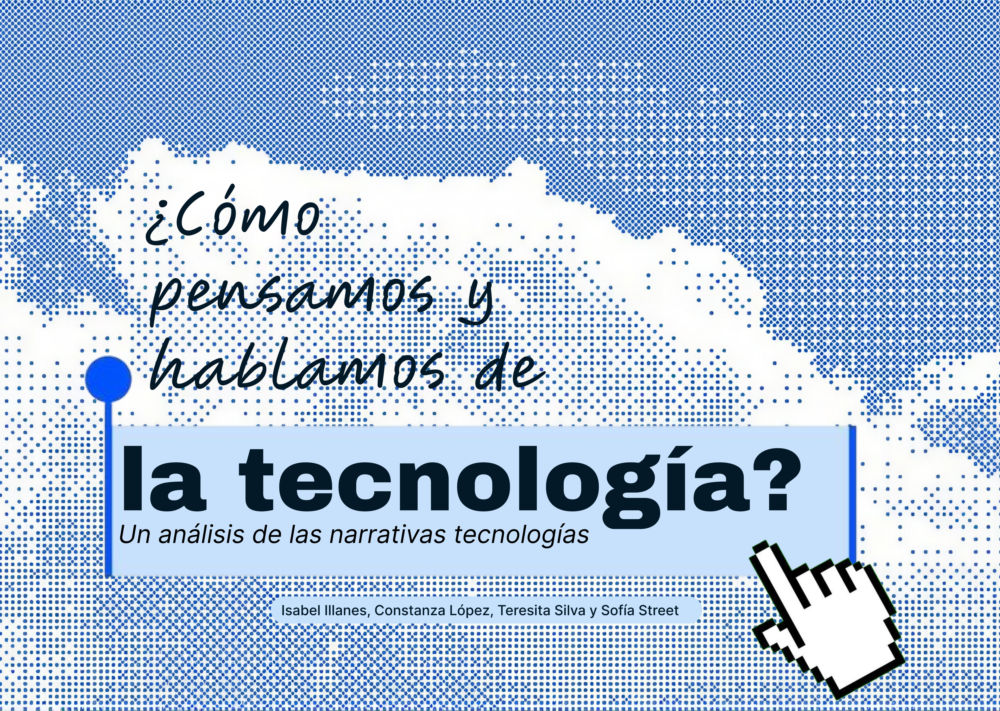

Se entrevistó a personas de distintas edades, géneros, niveles de educación, contextos geográficos y laborales, llevando a cabo las conversaciones en un entorno cotidiano con el fin de que los participantes se sintieran cómodos al responder. Los entrevistados forman parte de una muestra que abarca desde los 19 hasta los 82 años e incluye a mujeres y hombres con diferentes profesiones y situaciones laborales. Intencionamos principalmente diferencias etarias con el fin de abordar a jóvenes que nacieron con tecnologías digitales más desarrolladas, generaciones intermedias y mayores, que han tenido que adaptarse a los cambios tecnológicos para contrastar diversas experiencias, relaciones y maneras de pensar la tecnología para analizar a fondo sus diferencias y coincidencias.
Participante 1: Hombre, 19 años, estudiante de ingeniería (cursando estudios superiores), actualmente reside en Santiago.
Participante 2: Mujer, 20 años, estudiante de letras (cursando estudios superiores), actualmente reside en Santiago.
Participante 3: Hombre, 52 años, veterinario (con estudios superiores completos, título universitario), actualmente reside en Osorno.
Participante 4: Mujer, 80 años, jubilada y con enseñanza media completa, actualmente viviendo en Osorno.
Participante 5: Mujer, 20 años y estudiante de animación digital y videojuegos (cursando estudios superiores), actualmente viviendo en Santiago.
Participante 6: Hombre, 58 años, trabajador independiente con enseñanza media completa, actualmente viviendo en Santiago.
Participante 7: Hombre, 30 años e ingeniero (con título universitario), trabajando en una empresa, actualmente viviendo en Santiago.
Participante 8: Mujer, 57 años, trabajadora independiente y dueña de casa, con un título de enseñanza media técnico-profesional, actualmente viviendo en Santiago.
Participante 9: Mujer, 59 años. Actualmente desempleada, ha trabajado toda su vida en plantas procesadoras de alimentos para salmones. Enseñanza media completa y educación técnica superior incompleta, actualmente viviendo en Pargua, comuna de Calbuco, Los Lagos.
Participante 10: Mujer, 68 años. Agricultora y dueña de casa, enseñanza básica completa actualmente viviendo en Changüe, comuna de Maullín, Los Lagos.
Participante 11: Hombre, 63 años. Agricultor y carpintero, enseñanza básica completa, actualmente viviendo en Pargua, comuna de Calbuco, Los Lagos.
Participante 12: Mujer, 46 años y profesora de lenguaje (título universitario) , actualmente viviendo en Santiago.
Participante 13: Mujer, 82 años y dueña de casa, enseñanza media completa, actualmente viviendo en Santiago.
Participante 14: Mujer, 23 años y estudiante de terapia ocupacional (cursando estudios superiores), actualmente viviendo en Santiago.
Participante 15: Hombre, 36 años y administrador de una empresa de aceite, (egresado universitario), actualmente viviendo en Santiago.
A partir de las diferentes entrevistas, logramos identificar principalmente las narrativas de instrumentalismo, tecno-pesimismo, tecno-optimismo, tecnopoder y, en menor medida, la de solucionismo, que se presentó de forma explícita en el Participante 3.
El tecno-pesimismo se manifiesta de forma implícita y distinta según el rango etario. En las generaciones jóvenes (19 a 23 años - estudiantes como P1, P2, P5 y P14), hay un pesimismo corporal y cognitivo, relacionado con la pérdida de atención (brain rot y agotamiento), con la pérdida de habilidades de pensamiento crítico y con la dependencia de tecnologías como la inteligencia artificial. Esto se evidencia, por ejemplo, cuando el Participante 1(19 años) señala que “ (...) las redes sociales en un sentido me han agotado, me han deteriorado el cerebro, me lo han dañado permanentemente.” (00:11:04), o cuando la Participante 5 (20 años) reflexiona que “ antes sí éramos mucho más independientes de las tecnologías, tipo podíamos hacer muchas cosas sin ellas (...) diría que nos hemos vuelto más inútiles actualmente.” (00:03:49)
En las generaciones mayores (57 a 82 años, como P4, P6, P8, P9, P10, P11, P13), hay un pesimismo relacional y laboral. Se articula desde la nostalgia de un pasado analógico donde existía vida de barrio, comparado con un presente donde las pantallas “encierran” a la gente y se presenta también relacionado con el miedo al reemplazo de las personas o a la automatización de tareas que implique la pérdida de empleos. Esto se refleja en los testimonios como el de la Participante 8 (57 años), quien advierte que “ (...) hay ciertos avances que (...) a lo mejor para un trabajo van a necesitar 2 personas y antes eran a lo mejor eran 8 personas que tenían trabajando ahí y (...) pues no encuentro que a lo mejor sea tan bueno” (00:05:45) o la Participante 4 (80 años) que destaca que la tecnología “(...) corta tanto los espacios de familia, me entiendes,(...) pero siento que los espacios de familia no se dan igual como antes, antes uno podía convivir más en familia, ahora no es así y eso creo que es lo peor.” (00:07:30)
A pesar de que en los discursos de las personas entrevistadas se evidencia la narrativa del tecno-pesimismo, los participantes reconocen de igual manera aspectos positivos y de utilidad relacionados con la tecnología. Esto se refleja, por ejemplo, cuando el Participante 6 advierte que el “mismo celular, te amarra”(03:32), pero menciona que el desarrollo de la tecnología es “ positivo, positivo, todo lo que sea mejor para la vida humana es positivo.” (02:33).
Además de la edad, el nivel educacional y la ocupación laboral marcan diferencias en cuanto a la manera en que los entrevistados hablan sobre la tecnología. Por un lado, los participantes con estudios superiores completos (como P3, P7 y P15) muestran discursos relacionados con el instrumentalismo, el solucionismo y el tecno-optimismo. Esto se debe a que entienden la tecnología como “ (...) herramientas que va creando el humano para aumentar la eficiencia de sus actividades” (Participante 3, 00:03:24). Además, consideran que los problemas asociados a las tecnologías no provienen de ellas, sino de una falta de regulación o mal uso humano. Por otro lado, los entrevistados con solamente enseñanza básica completa (como P10 y P11) tienen posturas más críticas asociadas al tecno-pesimismo y al tecnopoder. Esto se debe a que perciben la tecnología como un elemento con valores asociados, que es capaz de beneficiar o perjudicar a algunas personas. Esto se observa especialmente en el Participante 11 (63 años, agricultor y carpintero), quien define el propósito de la tecnología como “Gobernar” (01:33) y añade que “La tecnología va para unos pocos, pero no para todos. Los que tienen más van a tener más tecnología, que los va a ayudar a tener más nomás (...)” (02:27).
En cuanto a la narrativa del instrumentalismo, esta se presenta de forma explícita, natural y constante en los primeros minutos de casi todas las entrevistas. Los participantes inician su discurso afirmando que la tecnología ha impactado de forma positiva gracias al uso que le otorgan, definiendola en su mayoría como “herramientas para el uso de las personas” (Participante 1, 00:01:39) o señalando que “la tecnología es o se resume en realidad en una herramienta. Que te permite satisfacer una necesidad específica o un conjunto de necesidades específicas. Eso es lo que es para mi tecnología” (Paticipante 15, 00:04:01), considerandola como un elemento neutral, que responsabiliza exclusivamente al usuario y a sus intenciones, restando importancia al diseño y sus sesgos inherentes.
Sin embargo, a medida que la conversación avanza hacia preguntas sobre el propósito o sobre quién controla el desarrollo de la tecnología, los participantes comienzan a presentar contradicciones u otras narrativas como tecno-positivismo, tecno-pesimismo, tecnopoder,de manera más implícita. Por ejemplo:
Tras haber hecho entrevistas a personas de diversos contextos y haber realizado los respectivos análisis de sus visiones con respecto a la tecnología, llegamos a la conclusión de que en su mayoría coincide en una postura principalmente instrumentalista, tecno-optimista, tecno-pesimista, de tecnopoder y solucionista. A diferencia de la mirada que tenemos como grupo respecto a la tecnología desde el marco de teoría crítica, con diferentes inclinaciones hacia las narrativas de tecno-pesimismo, tecno-poder e instrumentalismo. Por lo que cuando analizamos las entrevistas principalmente lo hacemos desde ese otro enfoque base.
Cuando hablamos con una narrativa instrumentalista, se está analizando desde la perspectiva de una herramienta o servicio a disposición de las personas, que debería cumplir con el propósito de facilitar o mejorar ámbitos de la vida humana, infiriendo de esta manera que su uso se maneja por una mente con un objetivo detrás el cual a de cumplir. Pero a partir de aquí se identifican diversos puntos de vista dependiendo de la relación con la tecnología: por un lado, se reconocen los beneficios que han traído los avances de ésta, reconociéndose su importancia e influencia a lo largo de los distintos periodos de la historia y las civilizaciones que han existido, contribuyendo a la evolución del conocimiento y la capacidades humanas. Pero se manifiesta preocupación por la creciente dependencia que se evidencia con los acelerados avances tecnológicos que tienen la capacidad de reemplazar la actividad humana, y concretamente, los procesos de creación y desarrollo de dichas actividades (que en muchos casos simplifica un arduo trabajo que anteriormente requerían más tiempo y coordinación), pero que a la larga amenaza con disminuir la ejercitación del pensamiento creativo, el criterio propio y la autonomía, creando así una dependencia hacia esta tecnología.
Estas contradicciones, lejos de ser incoherencias de perspectivas, demuestran complejidad en las respuestas frente a su relación con la tecnología, ligadas a sus experiencias personales.
Al compararla con nuestra postura frente a dichos marcos tecnológicos, nos damos cuenta de que hay varias coincidencias ante escenarios específicos en los que se retrata el papel que juega en estos la tecnología, empezando por la idea de la tecnología como un elemento neutral por sí mismo. Si pensamos en ejemplos donde los avances han significado la simplificación de trabajos, o procesos complejos, a partir del sacrificio del pensamiento propio, como podría ser el uso de la Inteligencia Artificial, sería fácil culpar a la misma de forma superficial pues es lo que está a la vista, pero yendo más allá, podemos considerar que el uso irresponsable depende estrictamente de los usuarios y aquellos detrás de su funcionamiento y disponibilidad al público. Lo que nos hace pensar que al final sigue habiendo control respecto a la tecnología, pero no existe una conciencia clara de lo que puede llegar a abarcar. Esto lleva a que no haya límites claros en el ámbito ético de su uso, y existan posibles desigualdades sobre estos recursos tecnológicos. Reconocemos la importancia de establecer mecanismos que permitan supervisar y regular el desarrollo tecnológico, aunque tras esto, surge la interrogante sobre quién tendrá la autoridad para hacerlo.
Así, entendemos que el desarrollo tecnológico no ocurre de manera neutral, sino que está condicionado por las relaciones de poder entre quienes poseen, desarrollan y controlan las tecnologías. Lo que nos lleva a la narrativa del tecnopoder; representando una preocupación por la concentración de la capacidad de decisión tecnológica por sobre la mente humana. La cuestión ya no es solamente qué puede hacer la tecnología, sino quién tiene el poder de determinar cómo se desarrolla, quién puede utilizarla y a quién beneficia. Al analizar las narrativas, resulta importante cuestionar no solamente el lugar que ocupará la tecnología en el futuro, sino también la manera en que estamos construyendo nuestra relación con ella. En ese sentido, nos preguntamos si: ¿Son realmente inevitables estas narrativas o estamos contribuyendo a que se vuelvan inevitables al aceptarlas como parte natural de este progreso?
Consideramos que el principal desafío no consiste únicamente en determinar cómo incorporar estas innovaciones a la sociedad, sino en cuestionar qué tipo de sociedad estamos construyendo a través de ellas, quiénes participan en esas decisiones y qué capacidades humanas estamos dispuestos a sacrificar en nombre del progreso. La tecnología no debería entenderse como un destino inevitable ni como una solución universal, sino como una construcción humana que debe permanecer sujeta a la reflexión crítica y a las necesidades colectivas. Parte de lo que implica tener avances tecnológicos también conlleva a desarrollar valores frente a estos y su uso individual y colectivo para no perder de vista el sentido por el cual existe en primer lugar dicha tecnología.
Actualmente nos encontramos en un contexto de introducción y transición hacia la implementación de nuevas tecnologías transformadoras en todos los ámbitos de la vida. El elemento sustancial del cambio es la introducción de medios de inteligencia artificial, y en esta línea, emergen distintas percepciones sobre el tema. La discusión societal hoy se basa en el debate ético entre si es “buena o mala” y qué consecuencias podría traer al mundo. Ahora bien, al igual que la introducción de la fotografía o el internet, la IA y las nuevas tecnologías emergentes también se asentarán en la realidad global, y en ese sentido, resulta relevante proyectar qué narrativas tecnológicas serán preponderantes en los próximos 20 años.
A partir de las tendencias y contexto actual desde el que se piensa la tecnología, a grandes rasgos, proyectamos que la relación entre las personas y estas innovaciones estará marcada por una mayor concentración del poder sobre la tecnología, y por lo tanto mayor control y dominancia desde quienes manejan la tecnología. En paralelo, existirá una creciente dependencia hacia sistemas de inteligencia artificial, donde su desarrollo dejará de percibirse sólo como una herramienta para facilitar tareas cotidianas, sino que será consolidada como una infraestructura base indispensable para el funcionamiento de la sociedad. Entonces, la discusión dejaría de cuestionar su uso ético, ya que se orientaría a preguntarse quién controla y de qué manera se está controlando la tecnología.
En ese sentido, se destaca como una de las narrativas preponderantes el tecno-poder. Tomando en cuenta antecedentes actuales de cómo gobiernos y organizaciones internacionales están buscando nuevos medios de regular el uso de las tecnologías, es posible anticipar la gran importancia que tendrá el control sobre esta en las decisiones colectivas y las relaciones mundiales. Un caso concreto que sirve para previsualizar esta narrativa en el futuro son las cumbres sobre la IA, como el Diálogo Global sobre Gobernanza de la IA en Ginebra realizado en julio de 2026 (https://news.un.org/es/story/2026/07/1541647), donde el secretario general de la ONU, António Guterres, declaró que la tecnología que puede igualar al mundo también puede concentrarlo, y que la capacidad de cómputo, talento y datos se encuentra en manos de escasas empresas y países.
En el contexto nacional de Chile también se están gestando formas para poder controlar la implementación de la IA, como señala el medio del Senado de la República de Chile, en su artículo titulado “Inteligencia Artificial: especialistas de la industria, la academia y sector público debaten sobre nueva legislación” (2026) (https://www.senado.cl/comunicaciones/noticias/inteligencia-artificial-especialistas-de-la-industria-la-academia-y-sector) . La importancia de esto radica en entender cómo el control sobre las nuevas tecnologías generará un cambio de paradigma en la forma de entenderlas, pasando de ser consideradas simples herramientas que le sirven al humano, a un pilar fundamental en la construcción de la sociedad, pero que no actúan de manera neutral, sino que entra en lógicas de poder y control, marcando la relevancia de poseer los instrumentos para utilizarla eficazmente.
En paralelo al tecnopoder y de manera más discreta, otra narrativa tecnológica que identificamos como dominante en los próximos años es el solucionismo, esto debido a que la consolidación de las innovaciones en el plano global hará que cada vez sea más difícil desprender la noción de “tecnología” de cualquier aspecto de la vida, esto quiere decir que, la tecnología estará tan arraigada a nuestra realidad que resultaría esperable y normal el tener una solución inmediata de este carácter para cualquier problema.
Bajo este escenario solucionista, las personas también pueden delegar la responsabilidad de asuntos contingentes a un medio de solución técnica, y en ese sentido, aceptar o ignorar ciertas consideraciones éticas para justificar el avance tecnológico. Un ejemplo de cómo esta narrativa podrá hacerse más fuerte en el futuro aparece en una noticia del medio Android Headlines(https://www.androidheadlines.com/2026/10/sam-altman-openai-accept-bad-things-ai-risk-regulation.html) , e incluye los dichos del CEO de OpenAI, Sam Altman, quien expresó qué se deberían aceptar que ocurran ciertas cosas malas en pos del progreso de la tecnología. Aquí resulta igualmente importante quién está entregando el mensaje, que no es una persona cualquiera, sino que es uno de los más grandes precursores de la inteligencia artificial, y en este contexto, su influencia es capaz de afectar la opinión pública y normaliza la ocurrencia de desafíos en el área.
A modo de cierre y de acuerdo al análisis realizado, proyectamos para los siguientes 20 años el predominio de las narrativas tecnológicas del tecnopoder y el solucionismo. La consolidación y normalización de las innovaciones como la inteligencia artificial hará que no se discuta sobre el uso ético de la tecnología, en cambio se orientará la discusión hacia quién posee el poder de tomar decisiones sobre ella y sobre qué otros agentes. Por otro lado, el avance en el área hará que los avances tecnológicos sean internalizados en las rutinas y lógicas mundiales, por lo que incrementa la expectativa de tener una solución técnica a los problemas. Esto no significa que otras narrativas desaparezcan, sin embargo, de acuerdo con la situación actual en el plano tecnológico, consideramos que estas son las corrientes que tomarán más fuerza y se instalarán en la manera de pensar de la población, y a partir de esto es que seleccionamos la narrativa del tecnopoder para desarrollarla a más profundidad en el siguiente encargo.
00:00:02 Entrevistadora Hola [A.A].
00:00:04 Entrevistado A.A Hola Sofía.
00:00:06 Entrevistadora Para el ramo de diseño, tecnología y sociedad estoy realizando entrevistas para explorar cómo las personas piensan y hablan sobre tecnología, entonces te voy a hacer algunas preguntas, quiero que respondas con total sinceridad y no hay respuestas buenas ni malas, solo queremos saber tu opinión. Para comenzar, ¿hay alguna tecnología que haya cambiado tu vida significativamente? ¿Cuál y por qué?
00:00:46 Entrevistado A.A O sea, tecnología digital encuentro que a todos nos ha cambiado la vida como las redes sociales, para bien o para mal, para conectar con intereses que nosotros creemos que nadie los tiene. Uno puede encontrar una comunidad, pero igual se ha mostrado que nos aliena un poco como personas.
00:01:07 Entrevistado A.A Y por otra parte, yo encuentro que más para mal que para bien ChatGPT, la inteligencia artificial, debido a que encuentro que antes ocupábamos mi pensamiento crítico y ahora la facilidad de ocupar el ChatGPT disminuye mis habilidades críticas.
00:01:26 Entrevistadora Entiendo, muy interesante. Otra pregunta, ¿Qué entiendes por tecnología? ¿Qué incluirías o qué dejarías fuera de tu definición?
00:01:39 Entrevistado A.A O sea, yo encuentro que en tecnología está la tecnología digital y la tecnología como normal. La tecnología normal son las herramientas que nosotros ocupamos que va desde como un martillo etcétera pero más complicado a máquinas industriales que permiten la mayor producción y lo digital que es como que es tecnología distancia. Son herramientas según la tecnología, herramientas para el uso de las personas.
00:02:16 Entrevistadora ¿Crees que la tecnología tiene un propósito?
00:02:20 Entrevistado A.A O sea, la tecnología tiene múltiples propósitos, depende de cómo uno la use. La tecnología se ha ocupado para dañar a las personas para matarlas, pero igual también para ayudarlas como en la salud. Siento que la tecnología es un cuchillo de doble filo.
00:02:40 Entrevistadora ¿Sientes que podríamos vivir sin ciertas tecnologías o ya no hay vuelta atrás?
00:02:46 Entrevistado A.A Si, encuentro que el ser humano, la cualidad que lo hace el ser humano es que se puede adaptar a todo. Siento que nos adaptaríamos, sería complicado, pero no sería el fin del mundo. Si por ejemplo con el internet 2 billones de personas no lo ocupan, 2 billones de personas en el mundo no tienen acceso al internet, entonces decir que la gente no puede vivir sin internet sería una mentira.
00:03:14 Entrevistadora Y por ejemplo, ¿tú podrías vivir sin, por ejemplo, tu celular?
00:03:21 Entrevistado A.A O sea, yo siento que tendría síndrome de abstinencia, al principio estaría tiritando, pero sí, siento que podría después de un rato y no sé el efecto que tendría en mí, si sería para bien o para peor, pero lo que sé es que tendría más tiempo para enfocarme en otras cosas.
00:03:40 Entrevistadora Ya, sí, pero por ejemplo, imagínate sin celular, ¿cómo conectarías con otras personas o incluso con asuntos académicos?
00:04:03 Entrevistado A.A Sería una lata, porque como mi celular tengo todos los contactos guardados, entonces la verdad no me sé el número de una persona, no me sé el número de mi mamá, de mi papá.
00:04:20 Entrevistado A.A el mío con suerte, a veces lo tengo que revisar, entonces tendría que buscar todo, sería un cacho.
00:04:33 Entrevistado A.A No sé cómo lo haría, me moriría, me mataría, no mentira.
00:04:40 Entrevistadora ¿Crees que la tecnología puede resolver problemas como la pobreza, el cambio climático o la desigualdad?
00:04:48 Entrevistado A.A Yo encuentro que la tecnología ya tiene el poder de eso, simplemente que no se ocupa para eso, pero igual por otro lado yo no encuentro que esos sean problemas que uno pueda resolver completamente, por lo menos en nuestro sistema siempre va a haber gente pobre, siempre va a haber desigualdad, porque el ser humano no quiere ser igual al resto, quiere ser mejor. Tenemos una naturaleza egoísta, de ambición y el abuso, la guerra, el odio siempre va a estar.
00:05:26 Entrevistadora Muy interesante lo que dices. ¿Quién crees que decide cómo se desarrolla la tecnología y para quién?
00:05:41 Entrevistado A.A Esto lo encuentro como… ¿Puedes repetir la pregunta?
00:05:47 Entrevistadora ¿Quién crees que decide cómo se desarrolla la tecnología y para quién?
00:05:55 Entrevistado A.A Depende del país, porque por ejemplo, en Estados Unidos la gente, los Tech Bros, Elon Musk, el CEO del ChatGPT, etcétera, ellos son los que tienen el monopolio, tienen la mayor parte del desarrollo tecnológico en sus manos, pero en otros países como en China está más potenciado por el Estado. Pero igualmente encuentro que es peligroso darle este poder a un individuo, ya sea el gobierno o organizaciones privadas, porque, por ejemplo, el CEO de ChatGPT dijo que su futuro ideal era que la gente no tenga que trabajar, no tenga que hacer nada y que él les pueda dar a todos, como misericordia, compasión y darles la vida, es como no encuentro que sea safe, como seguro. Ahh, es que yo soy bilingüe, yaaa. Quizá seguro darle el poder del desarrollo de la tecnología a una persona, encuentro que es importante democratizar la tecnología.
00:07:06 Entrevistadora Buenísimo, y en ese sentido, ¿quién crees tú o qué organismo debería controlar cómo se desarrolla la tecnología?, ¿O cómo lo organizarías?
00:07:23 Entrevistado A.A Como lo organizaría… como un dictador, no mentira. La organizaría… es que es complicado, como que lo mejor sería un ente superior que organice y sepa la verdad absoluta, pero no existe, no hay un dios. Bueno, puede que haya un dios según tu punto de vista, pero encuentro que la gente tiene que ser inteligente, pensar críticamente, pero lamentablemente hoy en día la mayoría de la gente es estúpida, no es estúpida, pero no tienen mucho pensamiento crítico y tampoco tienen empatía.
00:08:05 Entrevistadora Ya, entonces no…?
00:08:07 Entrevistado A.A No sé cómo organizarla. No le encuentro una solución que sea la mejor.
00:08:16 Entrevistadora Y para ir terminando ya, ¿hay alguna tecnología que te preocupe especialmente?
00:08:25 Entrevistado A.A O sea, ahora con las noticias tenemos que dicen que la IA nos puede destruir la humanidad en los próximos 10 años, eso es bastante preocupante. Igualmente tenemos estamos como en un periodo político bien complicado. Entonces, como la tecnología para las armas, como las bombas nucleares, etcétera, me da miedo que se progrese a algo aún peor, a una herramienta de destrucción masiva que pueda destruir algo, a algo gigantesco. Me da pánico pensar que en 20 años más ya todo esté destruido y que todo mi esfuerzo ya no valga para nada.
00:09:07 Entrevistadora Ay que pesimista. [Risas]. No, ya, pero por ejemplo en tu vida cotidiana ¿hay alguna tecnología que te preocupe o de tu entorno?
00:09:23 Entrevistado A.A ¿Puedes dar un ejemplo?
00:09:25 Entrevistadora Podría ser como la inteligencia artificial o redes sociales.
00:09:32 Entrevistado A.A Si, osea las redes sociales porque, aunque no me gusta admitirlo, forman una gran parte de mi vida. Amo TikTok, ver videos a las 2:00 de la mañana de gente cayéndose es mi yo lo disfruto demasiado. Me da mucha satisfacción, pero y si dejara de tener TikTok o redes sociales en general, siento que sería muy aburrido y eso no me gusta, siento que debería hacer más cosas para que no, que mi felicidad no dependa de las redes sociales tanto.
00:10:11 Entrevistadora Yo creo que eso es algo igual que pasa como de que las redes sociales te roban la atención, eso es super grave tu atención es un recurso y se va deteriorando mientras más usas redes sociales, ¿no te preocupa eso?
00:10:36 Entrevistado A.A Me preocupa porque muchas veces, porque a mí me gusta leer, porque encuentro las historias importantes, pero mi foco de atención está tan deteriorado que aunque yo trate de enfocarme en mi lectura después de unos 15 minutos, es como que si hubiera corrido una maratón, entonces es como tengo que ver un poco mi teléfono para después poder concentrarme de nuevo en el libro.
00:11:01 Entrevistadora Pausa leyendo para ver Reels. [Risas].
00:11:04 Entrevistado A.A Si, es como que necesito hacerlo porque me canso demasiado porque aunque me encante la lectura, me encanta lo que está escrito, lo que me puedo imaginar las redes sociales en un sentido me han agotado, me han deteriorado el cerebro, me lo han dañado permanentemente.
00:11:23 Entrevistadora Brainrot.
00:11:23 Entrevistado A.A Brainrot, total. Tung Tung Sahur.
00:11:31 Entrevistadora Muchas gracias por participar de la entrevista. Vamos a usar tus datos de manera confidencial y eso sería todo.
00:11:42 Entrevistado A.A Mamá, lo logré.
Demuestra tendencias más ligadas al instrumentalismo, y en menor medida, visiones tecno-pesimistas. Se enfoca en cómo las personas utilizan las tecnologías, más que en cuestionar cómo estas fueron desarrolladas pensando en el comportamiento de los usuarios.
00:01:39: “herramientas para el uso de las personas.” Aquí, defina la tecnología como un elemento neutro, ya que deja el criterio de uso de la tecnología meramente a quién la utiliza.
00:02:20: “O sea, la tecnología tiene múltiples propósitos, depende de cómo uno la use. [...] Siento que la tecnología es un cuchillo de doble filo.” Considera que el uso de la tecnología depende de cómo se utiliza, o sea, dependiente del uso humano; pero no necesariamente de quién la crea.
00:11:04: “[...], lo que me puedo imaginar las redes sociales en un sentido me han agotado, me han deteriorado el cerebro, me lo han dañado permanentemente.” Se evidencia el tecno-pesimismo, destacando el daño permanente que han generado las redes sociales en su vida.
00:00:01 Entrevistadora Hola [A.G], muchas gracias por aceptar participar de esta actividad para el curso de diseño, tecnología y sociedad. Estoy realizando entrevistas para explorar cómo las personas piensan y hablan sobre tecnología. Tus datos serán usados con confidencialidad y también decirte que no hay preguntas buenas o sea no hay respuestas buenas ni malas es para conocer tu opinión ya entonces para comenzar ¿Hay alguna tecnología que haya cambiado tu vida significativamente? ¿Cuál y por qué?
00:00:50 Entrevistada A.G Pucha, o sea la verdad, la verdad no sé a qué te refieres con tecnología, perdón. ¿Tecnología como aparato electrónico?
00:01:02 Entrevistadora Es que esa es una de las preguntas ¿Que entiendes tu? Ya, después volvemos a la otra pregunta. Ya, pero así como por tecnología Si ¿Que entiendes tu por tecnología?
00:01:14 Entrevistada A.G Como internet o aparato electrónico o aparato electrónico Pucha, no sé, como dispositivos que tengan como acceso a internet donde pueda buscar como cosas. ya eso super ya y en ese sentido hay alguna tecnología que haya cambiado tu vida tu crees que como significativamente no sé pero si me ayuda harto como Google, tener computador por ejemplo como que me facilitan más las cosas a la hora de estudiar o como cosas así.
00:01:55 Entrevistadora Igual yo creo que nacimos un poco con Google, entonces hay algo que quizás tu hayas dicho como un antes y después de algo que alguna tecnología que haya generado como un cambio o no, también puede ser igual si, pero es como inteligencia artificial, no se si sirve.
00:02:23 Entrevistada A.G Absolutamente Como estoy estudiando como algo relacionado con letras, unas amigas me recomendaron como una aplicación, una página web donde yo subo archivos y me los resume, pero así como bien resumido, creo yo, y me sirvió harto el semestre pasado para algunos trabajos, entonces si eso como que me cambio harto porque era como menos de estrés como a la hora de tener que leerme todas las cosas
00:02:51 Entrevistadora Ya buenísimo, siguiendo. ¿Crees que la tecnología tiene un propósito? Y si es así, ¿cuál?
00:02:58 Entrevistada A.G O sea yo creo que sí, como ayudar a la gente como a no sé, a buscar como cosas, como información importante, como relevante para ellos, de repente aunque sea una pregunta como súper estúpida, uno la busca en Google y está como ahí, tiene como el propósito de informar.
00:03:20 Entrevistadora ¿Sientes que podríamos vivir sin ciertas tecnologías?
00:03:23 Entrevistada A.G Si, tu crees que si podemos vivir sin ciertas tecnologías, o sea como no sé, pues como en la prehistoria cuando no existía la tecnología como la conocemos hoy en día la gente igual sobrevivía, entonces yo creo que igual, o sea seria como complicado pero igual yo creo que se podría vivir sin Google igual se podría po, o sea tenía enciclopedia, poder ir a una biblioteca a buscar información, como que no sería más trabajo pero como que yo creo que si se podría sobrevivir.
00:04:02 Entrevistadora Ya y en como un caso particular tuyo, si yo te pongo un ejemplo de que desde mañana no vas a tener celular, cómo sería.
00:04:18 Entrevistada A.G No, yo creo que.
00:04:19 Entrevistadora ¿Crees que podrías llevar tu vida?
00:04:21 Entrevistada A.G ¿Como normal? Si, pero me costaría harto, o sea, no podría comunicarme a lo mejor como tan rápido con más gente, pero no siento que me vaya a morir, como que podría vivir, o sea sería muy complicado para mi, porque yo igual ocupo harto el teléfono, pero yo creo que si, a lo mejor debería empezar a ocuparme los teléfonos.
00:04:50 Entrevistadora ¿Crees que la tecnología puede resolver problemas como la pobreza, el cambio climático o la desigualdad?
00:04:57 Entrevistada A.G Ay, no sé, yo creo que sí. Es como darle acceso a tecnologías a gente más necesitada, a lo mejor sí ayuda como a que tenga más herramientas para poder como desarrollarse en la vida. O sí, eso sí.
00:05:20 Entrevistadora ¿Quién crees que decide cómo se desarrolla la tecnología? ¿Y para quién?
00:05:29 Entrevistada A.G O sea, ¿quién desarrolla la o quién…
00:05:33 Entrevistadora ¿Quién decide cómo se desarrolla la tecnología?
00:05:38 Entrevistada A.G Los usuarios, no sé, o sea como.
00:05:44 Entrevistadora ¿Tu quien crees que dice para que se va a ir la tecnología vamos a desarrollar estas áreas y no otras áreas?
00:05:52 Entrevistada A.G Eso es, las empresas, las empresas, dependiendo de lo que necesiten, no sé.
00:06:00 Entrevistadora ¿Con el propósito de qué?
00:06:03 Entrevistada A.G De beneficiarse económicamente.
00:06:05 Entrevistadora Ah, si, ya, si, super. ¿Y con eso que dijiste como de las empresas, quién crees tú que debería decidir cómo se desarrolla la tecnología? ¿Te parece bien que sean las empresas?
00:06:31 Entrevistada A.G No, creo que debería ser la sociedad en base a las necesidades en las necesidades sociales. Sí, yo creo que sí, yo creo que habría que hacer estudios de lo que necesita la gente y enfocar los recursos económicos a esas necesidades.
00:06:51 Entrevistadora Súper. Ya, ahora para ir terminando, ¿hay alguna tecnología que a ti personalmente te preocupe? ¿Y por qué?
00:07:03 Entrevistada A.G Ya, si entiendo tecnología como algo más social, redes sociales, como ese tipo de cosas. Como que de repente sí, es como preocupante porque hay tanta como desinformación, como noticias falsas, como que uno no puede como generar como una opinión crítica a base de redes sociales, que es como lo que hoy en día como que se hace, como que ya uno no investiga por su cuenta, sino como lo que sale en Instagram, en TikTok, uno como que se lo cree y repite el discurso y al final termina siendo como un discurso vacío, sí, mucho fundamento, argumentos como propios.
00:07:40 Entrevistadora Ya terminamos la entrevista. Muchas gracias por participar. Eso sería todo.
En sus declaraciones, subyace un sentido de instrumentalismo y solucionismo, considera la tecnología como un medio práctico para facilitar tareas.
“(...), como ayudar a la gente como a no sé, a buscar como cosas, como información importante, como relevante para ellos, (...), tiene el propósito de informar.”
“Es como darle acceso a tecnologías a gente más necesitada, a lo mejor sí ayuda como a que tenga más herramientas para poder como desarrollarse en la vida.”
Sobre el solucionismo, si piensa que puede generar un impacto en la vida de las personas y generar cambios reales en el mundo.
Hola [E.S] para el ramo de diseño, tecnología y sociedad estoy haciendo entrevistas para explorar cómo las personas piensan y hablan sobre tecnología. Entonces te voy a hacer unas preguntas relacionadas al tema y decirte igual que no hay respuestas ni buenas ni malas, es solamente para conocer la opinión de distintas personas. Ya entonces para comenzar ¿sientes que hay alguna tecnología que haya cambiado tu vida significativamente? ¿como cuál y por qué crees que cambió tu vida?
00:00:54 Entrevistado E.S Bueno el celular, y el celular con los datos principalmente y WhatsApp yo creo que ha sido lo que más ha cambiado mi vida, porque ahora todo como que gira en los mensajes y la gente por enviarte un mensaje cree que tú tienes que darte por enterado y dar una respuesta inmediata. Ha sido muy como, es como un poco agotador en temas de trabajo.
00:01:31 Entrevistadora Ya si, eso igual lo vimos en clase, es como la tecnología que te obliga a siempre estar pendiente y como que tienes que estar disponible permanentemente.
00:01:46 Entrevistado E.S Todo el tiempo. Días atrás yo leía de esas cosas que yo siempre… esos Twitter y cosas que tú sabes que yo siempre veo.
00:01:58 Entrevistado E.S Entonces ahí decían que una persona en los años 90, en los años 80, se colocaba su chaqueta en la oficina, o sea terminaba de hacer sus cosas, su trabajo, se colocaba la chaqueta, se iba a su casa y se olvidaba del trabajo hasta el otro día en la mañana. Ahora tú tomas tu chaqueta, te echas el celular al bolsillo y vas saliendo del trabajo y te llega un whatsapp preguntándote de algo del trabajo o a las 11 de la noche, a las 10 o hay gente que a veces no sé yo por eso lo tengo silenciado en la noche donde Diego, los ordeñadores me o sea Diego me tiene en un grupo en que los ordeñadores mandan whatsapp por decirte a las 2 de la mañana.
00:02:48 Entrevistado E.S Entonces nada que ver, pero ellos están trabajando y es un whatsapp de trabajo entonces ellos envían información a esa hora y yo estoy durmiendo a esa hora, igual te das cuenta entonces esa tecnología como que a uno lo ha perseguido más.
00:03:12 Entrevistadora Siguiendo con otra pregunta ¿Qué entiendes tú por tecnología? ¿Cómo la definirías?
00:03:24 Entrevistado E.S Bueno tecnología es como una palabra así que uno la usa tanto y no como que no la sé definir pero tecnología yo diría que son herramientas que va creando el humano para aumentar la eficiencia de sus actividades, que pueden ser herramientas tanto físicas como herramientas en este sentido que estábamos hablando del WhatsApp tecnológica.
00:04:02 Entrevistadora ¿Y crees que tiene un propósito?
00:04:08 Entrevistado E.S Totalmente, el propósito de aumentar la eficiencia de nuestro trabajo, hacerlo más rápido, hacerlo más cómodo, hacerlo más amigable también a veces.
00:04:32 Entrevistadora ¿Sientes que hoy en día podríamos vivir sin ciertas tecnologías o ya no hay vuelta atrás? Como por ejemplo lo que decías tú del celular, WhatsApp.
00:04:45 Entrevistado E.S Yo creo que no hay vuelta atrás porque ya todos estamos acostumbrados ya estamos ya es como cuando nosotros hemos ido a Santiago en auto y uno para ubicarse o bueno o en cualquier otro lugar o cuando fuimos de paseo colocas el Waze y el Waze te permite que es una tecnología como para ubicarte y tú puedes llegar a cualquier lugar sin conocer nada y te permite ubicarte. Entonces como que uno ya no está dispuesto a no tener eso, por lo tanto la tecnología a uno lo ayuda mucho, pero trae consigo que a veces te va quitando libertad un poco, te va haciendo un poco esclavo de la tecnología y como la tecnología tan entretenida y a veces te facilita la vida pero te limita después en algún momento.
00:05:53 Entrevistadora Tiene sus consecuencias.
00:05:56 Entrevistado E.S Exactamente, tiene sus consecuencias.
00:06:00 Entrevistadora ¿Y tú crees que la tecnología puede resolver problemas como la pobreza, el cambio climático o la desigualdad?
00:06:13 Entrevistado E.S Por supuesto, antiguamente la tecnología, cuando yo era chico, la tecnología para eso, con respecto a ahora, había menos tecnología y era más cara y solo las personas de una condición social más alta podían tenerla. Principalmente estoy hablando de estas tecnologías de comunicaciones entre las personas. Y hoy en día cualquier persona puede tener el mismo celular y ni siquiera tiene que ser el más top de línea, pero tiene las mismas prestaciones. WhatsApp usa desde, no sé, desde el más encopetado de la sociedad hasta la persona más básica puede utilizar el whatsapp o el waze o toda esa facebook, instagram, todas esas tecnologías y es mucho más a la mano.
00:07:25 Entrevistado E.S Yo el otro día te conté esa historia en la manga, no sé si me puedo alargar con esto contigo. En la manga donde estábamos trabajando había un problema se parece que se nos había pasado un animal, que nos había pasado. Entonces, como eso nosotros lo vamos registrando en una aplicación y esa aplicación tú puedes descargar los números en un Excel. Y nosotros además, en esa aplicación están los números totales que tiene cada predio. Y un chico se hizo a un lado y yo lo veía aquí con el teléfono y lo movía y hacía cosas. Claro, el chico descargó el listado de los animales que tratamos con el listado de los animales que eran del predio y los subió en, cómo es que se llama esto en el en el whatsapp está esto que se llama Meta y subió los dos Excel y le pidió a Meta que le diga qué números estaban repetidos y qué números lo habían pasado y esto era allá abajo en Chiloé y Meta le hizo la pega, y una persona súper sencilla, un trabajador agrícola fue capaz de utilizar esa herramienta de tecnología que yo hasta ese momento no sabía para qué era Meta. Yo me aparecía un loguito aquí en el WhatsApp y yo no sabía para qué era. Y él, ya allá abajo en la isla, sabía para qué era Meta. Y él además tenía ChatGPT, pero de pago, no el básico. ¿Te das cuenta?
00:09:14 Entrevistado E.S Entonces, si la tecnología puede ayudar a mejorarla por eso, o cambiar, como dices tú, esto de la desigualdad totalmente, porque estas aplicaciones, no sé quién las creará o cómo las crearán, que más encima las crean y son gratis. Entonces, estas tecnologías de las comunicaciones, yo encuentro que son a otro nivel y ayudan a disminuir esa distancia entre la persona que antiguamente podía tener un teléfono y alguien que no tenía teléfono.
00:09:59 Entrevistado E.S Yo cuando era pequeño, mi esposa tenía teléfono en su casa. Yo no tenía teléfono en mi casa y yo para poder hablar con ella iba donde mi tía Mile que ella tenía teléfono. Entonces imagínate que yo tenía que ir a la casa de una tía para poder yo hablar con ella dentro de Osorno y ahora agarraría el teléfono y puedo estar hablando toda la noche.
00:10:28 Entrevistadora Si, claro, igual yo creo que se da lo mismo en comparación a antes, incluso como, yo no sé muy bien, no estoy muy segura, pero yo creo que antes había muchos más niños que no sabían leer o no iban al colegio y no podían obtener el mismo nivel de información que niños que sí tenían acceso a eso, pero ahora todos pueden tener un celular y tener el mismo acceso a todo.
00:10:58 Entrevistado E.S Total, absolutamente. O sea, antes tú te ibas a un colegio bueno y el colegio bueno tenía una buena biblioteca, podías acceder a buenos libros, y el niño que iba a un colegio malo o una escuelita de rural donde no existía biblioteca, imagínate, ese niño no tenía donde buscar algo de información. Entonces hoy en día ese niño en la escuelita rural tiene acceso a la misma información que tiene el niño que está en el colegio no sé cuánto, que estudia el hijo del rey de Inglaterra. ¿Te das cuenta? Entonces mucho más accesible todo. Bueno, y con la tecnología también de muchas otras cosas que hoy en día todas las cosas son mucho más accesibles. Antes tú crees que una persona de un nivel socioeconómico bajo iba a poder tener una cafetera eléctrica, un tostador de eléctrico, un horno eléctrico. Antes no existía eso. Y hoy en día eso cualquiera puede tener las mejores cosas que puede tener otro, las puede tener cualquiera.
00:12:13 Entrevistadora Entonces avanzando, ¿Quién crees que decide cómo se desarrolla la tecnología? ¿Quién controla su producción y para quién va dirigida?
00:12:28 Entrevistado E.S Yo ahí creo que eso, ¿Quién controla cómo se puede decir? ¿Quién controla quién se produce?
00:12:37 Entrevistadora ¿Cómo se desarrolla la tecnología?, ¿Quién decide qué áreas desarrollar y qué áreas dejar de lado eso?
00:12:48 Entrevistado E.S Yo creo que netamente el mercado, el mercado y lo que están viendo esos analistas o los que están sintiendo que hace falta. Ese grupo de personas desarrolla cosas y productos para llenar una necesidad. Ven que todos estamos queriéndonos unir y por decir el Instagram de compartir fotos y que las fotos después le colocan, que las mejoran.
00:13:23 Entrevistado E.S WhatsApp primero era solo mensajería, después era con fotos, después fue siendo con llamados llamados por voz, ahora son llamados con imágenes y todos ellos van creando cosas y van haciéndolo para satisfacer a veces necesidades de nosotros, porque debe haber habido gente que le dijo oye, y por qué ahora ustedes WhatsApp no colocan llamados de voz. Ya desarrollaron una cosa para hacer llamados de voz. Después oye, y por qué no le hacen un desarrollo para poder con imagen la llamada. Ya hagámosle de desarrollo. Entonces ellos van como creando y van mejorando su tecnología para lo que nosotros pedimos.
00:14:07 Entrevistado E.S Lo mismo la computación cada vez hay juegos y que necesitan mejores prestaciones y todo va mejorándose en base a lo que uno va requiriendo.
00:14:21 Entrevistado E.S Antiguamente, no sé, te voy a sacar una cosa que antes era súper raro que exista aire acondicionado aquí en el sur de Chile. Ahora ya es como una cosa de repente como que ah y tu casa no tiene aire acondicionado para el verano. ¿Te das cuenta?
00:14:41 Entrevistado E.S Entonces son cosas que se van desarrollando y se van masificando productos de que tenemos mejores ingresos y también los productos también los otros que se van haciendo más baratos. ¿Te das cuenta?
00:14:59 Entrevistado E.S Entonces la tecnología, hay ciertas cosas que se van desarrollando que en el principio son súper, súper, súper caras y con el paso de los años esa mismas cosas se van haciendo baratas. Es el caso de los teléfonos.
00:15:12 Entrevistado E.S Yo siempre me acuerdo que al comienzo habían los celulares, eran como unas maletas y que eran carísimos, que lo podía tener muy poca gente. Y con el paso de los años, ahora ¿quién no tiene un celular?, ¿o no?, es súper raro ver gente que no tenga celular. Como es raro hoy en día, gente que tiene celular y no tenga plan de datos yo en los campos hay harta gente, no harta, pero hay así como más viejitos tienen, no sé si tú has visto unos teléfonos que se abren que son sólo para llamado, sólo por voz, sólo llamados de teléfono y ellos porque ya no saben manejar WhatsApp no más siguen teniendo esos teléfonos antiguos pero ya todos se subieron al carro de la otra tecnología más avanzada.
00:16:09 Entrevistadora Ya me voy a salir un poco de la pauta, pero ¿Cómo crees que ha impactado la evolución de la tecnología en, por ejemplo, tu trabajo como veterinario? ¿Sientes que ha cambiado desde que partiste o no?
00:16:28 Entrevistado E.S Si, porque yo cuando partí para mi fue como… cuando yo me empecé a dedicar al terreno y empecé a trabajar con este caballero cuando era Augusto Espinoza ¿te acuerdas? Yo en estos años en la parte reproductiva que hago yo sólo se hacía a mano a mano así en forma táctil de la mano de uno y en ese momento se empezaron a producir esos aparatos, esos ecógrafos portátiles que no necesitaban una instalación de corriente eléctrica, sino que era una batería y eran totalmente móviles y nosotros empezamos a usar esos aparatos en terreno y eso era tecnología pura, un aparato ecógrafo que era para llevarlo a un lugar que no era un hospital, ni una clínica, ni una cosa así, era totalmente de terreno y eso a mí me cambió mucho los trabajos porque además me permitió hacer cosas que antes no se podían hacer a través de la tecnología.
00:17:42 Entrevistado E.S Entonces lo otro, el teléfono como decíamos, la computación antiguamente cuando nosotros hacíamos esos muestreos de sangre tenían que en una planilla escribir los números de cada animal en una planilla a mano y hoy en día existen estos bastones que tienen ese aretito electrónico y uno le puede tomar el número en forma electrónica y no te equivocas en la numeración de la vaca.
00:18:18 Entrevistado E.S Entonces la tecnología en el rubro que yo trabajo agrícola igual ha avanzado cualquier cantidad. Hoy en día también existen unos collares, unos dispositivos que son capaces de detectar la actividad de la vaca, cuántas horas está rumiando, cuántas horas está echada, cuántas horas la vaca está descansando, cuánto está pastando, cuando presenta un celo, hay otros dispositivos que incluso le colocan unos bolos entre ruminales que le miden el pH ruminal entonces pura tecnología entonces toda esa tecnología va siendo más fácil y va mejorando el trabajo. Días atrás estaba mirando, hay unas cámaras que las colocan en la salida de las salas de ordeña por donde pasan las vacas. Entonces el caminar de las vacas tiene unos movimientos que son siempre iguales. Entonces el aparato con esta famosa inteligencia artificial ve cuál es el normal del caminar de las vacas y cuando una vaca sale de ese parámetro te la detecta que está coja y el equipo al otro día al salir de la sala de ordeña te la aparta inmediatamente para que la revisen porque está coja.
00:19:46 Entrevistado E.S Entonces hoy en día la tecnología, imagínate esto en el rubro mío imagínate todos los otros rubros de mi trabajo como de avanzar.
00:19:55 Entrevistadora Si, no había pensado como eso, como la evolución de tu forma de trabajar que sea tan distinta ahora.
00:20:08 Entrevistado E.S Oye Sofi, ahí en los tenderitos chiquititos le colocan unos aretes le colocan unos aretes en la orejita ya y ese aretito tiene una lucecita que se prende una lucecita azul o roja y tú puedes programar entre qué horario esa lucecita se prenda. Entonces, tú sabes que los terneros los vas a alimentar entre las 8 de la mañana y las 11. Entonces tú le dices, si tú quieres solo detectar que los que están enfermos, tú le dices préndas de las lucecitas rojas del arete entre las 8 y las 11. Entonces cuando tú miras el ternerito y el que tiene una lucecita roja en el arete, ese ternero tiene altas probabilidades de estar enfermo. Entonces la gente no tiene que mirar los otros, solo mira los aretitos y el aretito que está en rojo a ese lo revisan.
00:21:22 Entrevistadora Mucho más eficiente.
00:21:25 Entrevistado E.S Sí porque hoy en día hay gente que es súper buena detectando animales enfermos y ahí en algunos lugares que los viejos van, le dan la leche, le dan concentrado y se mandan a cambiar y el ternero queda botado atrás y ahí el ternero está botado así muriendo, pero los viejos no lo miran. Te das cuenta entonces el humano creó una cuestión para que oye aquí te estoy indicando, estoy enfermo y esos aretitos, los terneritos cuando están sanos ellos mueven sus orejitas, andan y se mueven y cuando está enfermo las orejitas se le caen, están así y esa cuestión, ese aretito es capaz de detectar eso entonces la tecnología es tremenda.
00:22:15 Entrevistadora Y como ya para ir cerrando según tu experiencia personal y quizás también como lo que percibes del mundo ¿Hay alguna tecnología que te preocupe?
00:22:28 Entrevistado E.S Sí.
00:22:29 Entrevistadora ¿Y por qué?
00:22:31 Entrevistado E.S Esta famosa inteligencia artificial me tiene muy preocupado.
00:22:38 Entrevistado E.S Y me llama la atención porque yo hasta hace poco como que esta cuestión de inteligencia artificial yo la escuchaba mucho esa palabra, pero hoy en día me pasa que cuando veo esos videos de tiktok y videos de no sé qué y videos de no sé cuántos o fotos. Hoy en día ya me pasa mucho que miro algo y no sé si realmente es de verdad eso o es que generaron un video y uno está porque uno le daba antiguamente mucha credibilidad a un video o mucha credibilidad a una foto, uno veía lo que sucedía en eso, pero hoy en día estos videos que generan son tan como tan bien hechos, que tú muchas cosas que capaz que son verdad, uno que las cuestiona a veces, te cuesta discernir y tienes que como que lo que tú siempre me decías y yo te agarraba pal leseo, como que verificar la fuente, te das cuenta?
00:23:48 Entrevistado E.S Hoy en día como que me pasa mucho que tengo que chuta, veo una, veo algo y yo será verdad o no será verdad, te das cuenta. Entonces esta cuestión de la inteligencia artificial yo creo que es súper buena, pero está teniendo esas limitaciones que a veces probablemente se control del humano sobre esto, no sé cuán efectivo será.
00:24:14 Entrevistado E.S Bueno, y el otro día escuchaba yo que porque estos gallos cuando hacen esto, desarrollan estos programas de inteligencia artificial, creo que como que los sacan de los equipos que están en red y los hacen trabajar como en equipo aparte. Y uno de estos aparatos, como que los gallos le pidieron que lograra como tratar de conectarse a la red y de como yo lo asomo es como que lo tenían preso en una cárcel y le propusieron al programa que trate de escaparse y de meterse a la red general. O sea, como al preso tratar de salir en libertad y creo que la cuestión lo logró hacer. Logró arrancarse de ese computador que lo tenían separado de la red. De alguna manera la cuestión generó y se logró arrancar.
00:25:15 Entrevistado E.S Lo malo de esto, de esta famosa inteligencia artificial es que no tiene como que no tiene escrúpulos o sea, tú le dices hazme algo y la cuestión como sea lo hace haciendo cosas buenas o haciendo cosas malas pero la cuestión, lo que él tiene en mente es llegar al objetivo que le pidieron no discerniendo como uno. Entonces esa inteligencia artificial como que le hace falta el discernimiento, el pensamiento crítico que nosotros tenemos y ese olfato de que a veces tu dices "no, yo esto no lo puedo hacer" Entonces eso me da miedo de esta famosa inteligencia artificial.
00:26:07 Entrevistadora Ya, muchas gracias por participar, usaremos tus respuestas con fines académicos y confidencialidad.
Sostiene una visión relacionada al solucionismo, donde a pesar de los problemas que puede traer el desarrollo tecnológico, estas mismas problemáticas pueden ser trabajadas desde la misma lógica de la tecnología. Se denota levemente un tecno-optimismo, argumentando que la humanidad siempre ha podido pasar obstáculos y que la tecnología es una herramienta para la eficiencia. La tecnología en sí no es buena ni mala, depende de cómo se utilice.
Bueno, [M.A], muchas gracias por aceptar participar de la entrevista. Esto es para un ramo que se llama diseño, tecnología y sociedad y estoy realizando entrevistas para conocer cómo la gente piensa y habla sobre el tema de tecnología. Ya, entonces te voy a hacer algunas preguntas sobre el tema, pero en realidad que no hay preguntas, o sea no hay respuestas malas ni buenas, sino que es solamente para conocer tu opinión.
00:00:46 Entrevistadora Entonces para comenzar, según toda tu vida y las experiencias que has tenido, ¿sientes que hay alguna tecnología que ha cambiado tu vida?
00:01:02 Entrevistada M.A Una tecnología que ha cambiado mi vida. Dios mío, ¿cómo puedo yo? ¿Cómo se llama expresar esa parte? Chuta, una tecnología. No sé qué podría ser, fíjate, ahí me pilla, soy mala para que me entrevisten.
00:01:35 Entrevistadora Quizás te puedo dar ejemplos.
00:01:38 Entrevistada M.A Ya dame una idea, dame una idea.
00:01:41 Entrevistadora Te podría dar, es que yo no sé muy bien cómo ha sido toda tu experiencia de vida, pero quizás cosas como que hayan cambiado tu vida puede ser el acceso a radio, tele, teléfono, cosas así.
00:02:07 Entrevistadora Por ejemplo, para mí, yo creo que una tecnología que ha cambiado mi vida es la televisión, para mí el teléfono, pero ya, para ti, como.
00:02:21 Entrevistada M.A Para mí la televisión.
00:02:25 Entrevistadora ¿Y por qué sientes que cambió?
00:02:30 Entrevistada M.A Porque se convirtió en para mí, en el mayor, ¿cómo se llama? Forma de, cómo se llama, de yo, informarme.
00:02:44 Entrevistadora Ya.
00:02:45 Entrevistada M.A Sí. ¿Y qué más? Pero por ahí va.
00:02:52 Entrevistadora Sí, también, o sea, aparte de informarte, yo creo que también puede ser como de eso de…
00:03:00 Entrevistada M.A Una entretención que es harto, grande también. Sí, una entretención y una forma de cómo se llama, de informarme.
00:03:12 Entrevistadora ¿Y si tuvieras que compararlo con tu vida antes de la televisión, qué cosas crees que cambiaron?
00:03:24 Entrevistada M.A ¿Qué cosas crees que cambiaron? Cambió la forma de ver muchas cosas. El hecho mismo de ver tanta información, ya sea buena o sea mala, sí, te cambia. ¿Me entiendes? Y eso, más que nada, es eso.
00:03:57 Entrevistada M.A Qué más puedo decirte, cómo se cambió mi vida más en la entretención.
00:04:06 Entrevistada M.A Más que nada, el poder percibir cómo son los demás seres humanos. O sea, sí, eso.
00:04:21 Entrevistadora Porque tú, ¿como cuantos años tenías cuando…?
00:04:28 Entrevistada M.A ¿Cuando apareció la tele?
00:04:30 Entrevistada M.A Yo tenía como 25 años una cosa así como 25 años una cosa así.
00:04:41 Entrevistadora Ya igual super joven yo todavía no tengo ni 20 y claro, he vivido toda mi vida con televisión, con celular, entonces antes, antes, antes de tus 25 años como te informabas o como pasabas tu tiempo.
00:05:05 Entrevistada M.A Bueno por la radio pero aparte de eso bueno las entretenciones eran otras, eran era juntarse con los amigos pero en forma como se llama más, más de barrio, ¿me entiendes? Más de cómo se llama de estar juntos en una casa, pero sin televisión, sin nada de esas cosas. Y bueno, en cambio ahora con la televisión, como que después de la televisión, como que tú te encerraste más en tu ahí por lo menos eso es lo que yo encuentro. Uno se encerró más en su casa, en su ambiente, en su lugar de cómo se llama.
00:05:51 Entrevistadora Ya. ¿Y crees que eso también es problemático?
00:05:59 Entrevistada M.A Sí, yo creo que es problemático. Mi vida era distinta antes. Creo yo que está hasta cierto punto, es problemático. Porque antes tú te entretenías, convivías y te divertías de otra manera. Cuando llegó a la televisión se fue como cortando de a poco esa parte, ¿me entiendes?
00:06:28 Entrevistadora Sí, yo creo que eso también pasa ahora con las redes sociales como Instagram o TikTok, yo no sé si tú usas TikTok, ¿cachas eso de los videos que uno ve…?
00:06:45 Entrevistada M.A Bueno, ¿cómo se llama? A veces YouTube, eso por ahí, pero mínimo, mínimo. Facebook más que nada, es lo único que veo en realidad. Y poco, no mucho tampoco.
00:07:03 Entrevistadora Y ya con eso, por ejemplo, no sé si tú lo sientes así también, pero los jóvenes usan mucho redes sociales, como lo que dices tú, Facebook, YouTube, Instagram, ¿tú cómo ves las nuevas generaciones que usan tanto estas redes?
00:07:30 Entrevistada M.A Lo hallo terrible, lo hallo terrible, lo hallo terrible porque como se llama, corta tanto los espacios de familia, me entiendes, no sé cómo explicarte, pero siento que los espacios de familia no se dan igual como antes, antes uno podía convivir más en familia, ahora no es así y eso creo que es lo peor.
00:07:58 Entrevistadora Voy a cambiar un poco el tema pero según lo que hemos estado hablando, ¿Qué entiendes tú por tecnología? O sea, como si tuvieras que definirla, ¿Cómo lo harías?
00:08:24 Entrevistada M.A ¿Cómo lo defino? Como las cosas que todo lo nuevo que estamos, con lo que nos manejamos, ¿Cómo se llama? No sé cómo decirte. ¿Cómo puedo decirte? Sí, que la tecnología por lo demás es un avance. Eso sí, un avance, un súper avance. ¿Sí? Eso no sé qué más decir.
00:09:03 Entrevistadora ¿Y crees que tiene algún propósito?
00:09:10 Entrevistada M.A Si, por supuesto que sí, por supuesto que si tienen propósitos buenos y tienen propósitos también, como se llama que no son tan buenos.
00:09:28 Entrevistadora ¿Sientes que hoy en día podríamos vivir sin ciertas tecnologías o ya no?
00:09:37 Entrevistada M.A Yo creo que ya no, así como como te lleva la vida en este momento como yo creo que ya no.
00:09:48 Entrevistadora Ya, puedes dar algún ejemplo de esas tecnologías que ya no pueden desaparecer.
00:10:05 Entrevistada M.A ¿Cuál te puedo decir? A ver, ay Dios mío ¿Qué te puedo decir? O sea realmente que cómo se llama que sea realmente necesaria y que no sea como, no sé, como el teléfono, no sé, como eso. ¿Puede ser eso?
00:10:24 Entrevistadora Sí, obvio, sí, sí, sí.
00:10:27 Entrevistada M.A Sí, como el teléfono, la misma televisión que se ha convertido en, ¿cómo se llama? En un, en un, demanda, como distracción en cada hogar. Dependemos tanto ahora de la televisión. ¿Qué más? No sé, no sé qué más es.
00:10:53 Entrevistadora Incluso yo encuentro que cosas como por ejemplo el auto o el avión, hoy en día, no se puede.
00:11:10 Entrevistada M.A Si el auto es necesario, Dios mío que es necesario, si de todas maneras es terriblemente necesario si el avión bueno claro el avión no me gusta nada el avión pero si también.
00:11:34 Entrevistadora ¿Crees que la tecnología puede resolver problemas más importantes como la pobreza o el cambio climático, cosas así?
00:11:54 Entrevistada M.A No, la parte climática no creo para nada que pueda o gran cosa no se hacer, no, yo creo o no.
00:12:03 Entrevistada M.A Lo que sí, bueno, podría ser. ¿Cuál fue la otra vez que el otro o lo otro?
00:12:13 Entrevistadora Como por ejemplo, en la pobreza.
00:12:18 Entrevistada M.A Sí, por la pobreza, sí, por pobre. Yo creo que sí, ¿no? Yo creo que sí. Yo creo que ahí influye cómo se llama. Sí, sobre todo para los niños, que cómo se llama, un ejemplo, por ejemplo, el hecho de tener un computador. Tan importante en este momento para todo el ser humano que se convirtió en algo tan importante, necesario, necesario.
00:12:50 Entrevistadora Claro, y ya para cerrar, según tu experiencia y quizás también como lo que percibes del mundo de tu entorno, ¿hay alguna tecnología que te preocupe?
00:13:11 Entrevistada M.A ¿Alguna tecnología que me preocupe? Siempre pienso, no sé si estoy bien en decirte esto, pero siempre pienso en la parte que siempre me preocupa cuando lo veo que son los robots, la creación de los robots?
00:13:26 Entrevistadora Ya.
00:13:27 Entrevistada M.A Eso sí que me preocupa. De los robots.
00:13:33 Entrevistadora ¿Y por qué?
00:13:37 Entrevistada M.A Porque siempre tengo la sensación de que ellos van a reemplazar tanto al gel humano que al final nosotros vamos a quedar, no sé cómo quedaremos, no sé, eso me da miedo.
00:13:56 Entrevistadora Ya, eso sería la entrevista. Muchas gracias [M.A] por participar, estuvo muy buena. Usaremos tus datos con propósitos académicos.
La entrevistada presenta una opinión más negativa sobre el desarrollo de la tecnología, también debido a cómo ha experimentado los cambios a través de los años. Alerta sobre la deshumanización que percibe en comparación a las relaciones sociales.
“Creo yo que está hasta cierto punto, es problemático. Porque antes tú te entretenías, convivías y te divertías de otra manera. Cuando llegó a la televisión se fue como cortando de a poco esa parte, ¿me entiendes?”
“Lo hallo terrible porque como se llama, corta tanto los espacios de familia, me entiendes, no sé cómo explicarte, pero siento que los espacios de familia no se dan igual como antes, antes uno podía convivir más en familia, ahora no es así y eso creo que es lo peor.”
00:00:00 Entrevistadora Ya está grabando.
00:00:04 Entrevistadora Bueno, como inicia la pregunta, vamos a partir de: ¿Hay alguna tecnología que haya cambiado tu vida significativamente? ¿Cuál y por qué?
00:00:14 Participante El computador, el PC porque me ha dado mucho más acceso a diferentes cosas y más encima es un reemplazo muy bueno de la televisión y de mi iPad que puedo dibujar, puedo ver Netflix, puedo ver todo lo que quiera, pero en el PC sentadita, cómoda.
00:00:34 Entrevistadora ¿Y siempre fue así o cambió en algún momento?
00:00:41 Participante ¿Cómo a qué te refieres si siempre fue así?
00:00:44 Entrevistadora Si siempre o sea supongo que en algún momento antes de tener un computador quizás usabas otros artefactos o en algún momento de tu edad te hiciste más como activo usando esta tecnología, no sé.
00:00:58 Participante Sí, sí, porque yo antes no tenía PC porque era de mi hermana mayor y yo tenía que ocupar las televisiones, pero ahí todo lo ocupábamos y teníamos que hacer como filita para usarlo y ver lo que queríamos y tenía el iPad, pero siempre me limitaba en todo lo que podía hacer.
00:01:18 Participante El PC es como mucho más completo.
00:01:21 Entrevistadora ¿Qué entiendes por tecnología?
00:01:27 Participante Herramientas digitales que te pueden favorecer.
00:01:32 Entrevistadora Ya, incluirías solamente herramientas digitales o sea por ejemplo ¿Qué dejaría ahí fuera? ¿Qué no consideras que es tecnología?
00:01:40 Participante Tienes razón es que por ejemplo los cuchillos también son una tecnología oh my god ¿Qué dejaría afuera?
00:01:49 Entrevistadora ¿Qué no consideras que es una tecnología?
00:01:51 Participante Las cosas más naturales ¿no?
00:01:54 Participante como no sé la comida y todo eso como natural por ejemplo el plátano la sandía pero eso.
00:02:03 Entrevistadora Pero entonces ¿consideras tecnología lo electrónico y cosas como un cuchillo por ejemplo?
00:02:10 Participante Si porque fueron hechos ya ¿puedo cambiar mi respuesta anterior?
00:02:13 Participante Son cosas hechas por humanos pensadas para un fin.
00:02:18 Entrevistadora Entonces hablando de que tienen como son pensadas por un fin ¿crees que la tecnología tiene un propósito? y ¿cuál en general?
00:02:28 Participante si y es satisfacer las necesidades de los humanos principalmente
00:02:30 Entrevistadora ya sientes ¿qué podríamos vivir sin ciertas tecnologías o que ya no hay una vuelta atrás? ¿y q tecnologías crees que costarían dejar?
00:02:54 Participante Si pero siento que costaría mucho y por ejemplo la misma, los computadores, televisiones, lo que es más digital, redes y eso.
00:03:01 Entrevistadora ¿Y crees que como la como lo formulo?
00:03:09 Entrevistadora ¿Crees que es por el punto donde está como la sociedad ahora?
00:03:15 Entrevistadora o sea crees que actualmente o sea crees que quizá antes o
00:03:20 Entrevistadora ¿Se podría haber vivido sin ciertas tecnologías o crees que ya está como es por el punto donde está la sociedad ahora como con el nivel de tecnología?
00:03:33 Participante ¿Cómo que ahora es el punto de inflexión?
00:03:37 Entrevistadora Si, como si es porque ahora quizás la tecnología tiene cierto nivel que ya no se puede volver atrás o ya desde antes crees que ya no se podía volver atrás, como a vivir sin ella?
00:03:49 Participante Ahora porque antes sí éramos mucho más independientes de las tecnologías, tipo podíamos hacer muchas cosas sin ellas, por ejemplo el chatGPT se ocupa para muchas cosas, entonces antes que no existía buscábamos soluciones cotidianas, diría que nos hemos vuelto más inútiles actualmente.
00:04:12 Entrevistadora Ya relacionado a eso,
00:04:18 Entrevistadora Si consideras que la tecnología nos ha vuelto más inútiles, ¿crees que igual está relacionado con el propósito que dijiste que era ayudarte?
00:04:29 Participante Si, porque al satisfacer tantas necesidades hace que nosotros no nos podamos valer por nosotros mismos al hacerlas porque buscamos la opción más rápida y corta y nos olvidamos de cuál era la que hacíamos principalmente entre comillas natural.
00:04:50 Entrevistadora Siguiendo con otra pregunta, ¿Crees que la tecnología puede resolver problemas como la pobreza del cambio climático o la desigualdad?
00:04:59 Participante Si, totalmente, yo creo que hay gente que se basa en hacer eso, solamente que por factores más sociales y políticos no, entre comillas, no las dejan.
00:05:14 Entrevistadora ¿Y puedes darme un ejemplo, quizás con qué tecnología?
00:05:17 Entrevistadora ¿Crees que se podría resolver eso?
00:05:21 Participante ¿Cualquiera de las tres?
00:05:22 Participante Si, cualquiera Ah, espérame, no me preocupes ¿De cuál era, pobreza.
00:05:37 Entrevistadora Pobreza, cambio climático o desigualdad O igual, ¿alguna otra problemática que consideras?
00:05:43 Participante No, por ejemplo, el cambio climático han habido muchos, muchas personas independientes que tratan de hacer sus negocios sobre tecnologías que ayuden al cambio y que, por ejemplo, se reduzcan los plásticos, buscar nuevas ideas para reducir esto y generalmente no prosperan porque o son muy caros, porque claramente necesitan invertir más y el plástico siempre es como mucho más barato. Entonces, siento que las personas de mayor rango en la sociedad deberían intervenir para ayudar y financiar esas cosas, cosas que nunca hacen.
00:06:32 Entrevistadora ¿Quién crees que decide cómo se desarrolla la tecnología y para quién?
00:06:41 Participante La clase alta porque pocas veces se hacen cosas para la clase media baja. Después de todo, son los que generalmente llegan a ser más propensos a comprar cosas caras. Los mismos robots que están saliendo a saber cuánto cuestan. Una persona promedio, una sociedad no podría comprar eso.
00:07:02 Participante Entonces, como que sirve de reemplazo a personas reales para cosas muy cotidianas. Y supongo que ellos lo compran, porque son caros.
00:07:14 Entrevistadora O sea, como ya, y por ejemplo, ¿consideras que siempre como la tecnología se ha desarrollado como para las personas como privilegiadas?
00:07:37 Participante No, diría que son más actuales esas cosas porque antes
00:07:42 Participante Siento que los inventos eran para cosas mucho más cotidianas, entonces eran para todos.
00:07:47 Participante Ahora siento que como ya tenemos todo lo cotidiano más solucionado, empiezan a hacer como problemas como de, entre comillas, rico, no sé, con Jets y toda la cosa, porque, por ejemplo, antes se hacían, no sé, para hacer mantequilla, esas eran las tecnologías de antes, que eran mucho más simples.
00:08:11 Entrevistadora Crees que hubo algún o sea bueno consideras que o sea cuál consideras que fue el gran como cambio quizá de alguna época como alguna tecnología que se desarrolló y que fue ese cambio o como cuál fue como el invento que pasó de un extremo a otro?
00:08:34 Entrevistadora si o cuál como en qué punto crees que se dejó de como
00:08:41 Entrevistadora como de diseñar cosas como más como preocuparse de tecnologías más cotidianas a empezar a preocuparse como más tecnologías como medio quizás superficiales, no sé.
00:08:52 Participante Quizás cuando nos empezamos a centrar mucho en la estética como eso de la estética, porque el maquillaje por ejemplo no es banal, si bien hay productos muy baratos y caros, obviamente los baratos son a veces peligroso hasta para el humano que nos usa y dañinos y siento que no es para nada necesario pero la industria te hace consumirlo y querer consumirlo y las cosas y los productos pueden llegar a costar por ejemplo un lápiz para ojos como 30 lucas.
00:09:27 Participante Entonces siento que son ya muy alta gama, eso?
00:09:32 Entrevistadora O sea, ¿Crees que igual se diseñen tecnologías para?
00:09:37 Entrevistadora No, no.
00:09:38 Entrevistadora Bueno, nada, ya la última pregunta, no es que esté pensando qué pregunta te hago y qué, como, qué indago y qué no indago.
00:09:53 Entrevistadora O sea, es que en mi mente si te digo algo, quizá es como es que no sé si te digo algo, es estar interfiriendo o si es no estar interfiriendo.
00:10:06 Entrevistadora Rellena el espacio. Eso, como cierre, ¿hay alguna tecnología que te preocupe especialmente y por qué?
00:10:15 Participante Que me preocupe.
00:10:17 Entrevistadora Sí, que te preocupe.
00:10:19 Participante Una tecnología que me preocupe Oh, que difícil pregunta. Diría, y esto es súper personal, que los cohetes.
00:10:50 Participante ¿Hay unos no espaciales?
00:10:53 Entrevistadora O sea, hay misiles, por ejemplo.
00:10:57 Participante Ah, no, si los espaciales los que van en el espacio.
00:10:59 Entrevistadora Ya, ya.
00:11:00 Entrevistadora ¿Y por qué?
00:11:02 Participante Bueno, esto es porque lo que se invierte en hacer que el cohete vuele y todo, siento que hay recursos que se están mal utilizando, porque siento que estamos viendo demasiado afuera de nuestro planeta en vez de lo que está ocurriendo en el planeta. Es eso, siento que deberíamos cambiar nuestro enfoque
00:11:20 Entrevistadora O sea, lo que te preocupa relacionado a la tecnología es como el uso que se le da o es como, pero el uso porque crees que está mal enfocada, o sea porque crees que el uso es como lo preocupante, como de los cohetes.
00:11:48 Participante Siento que es inútil, siento que están haciendo es porque los cohetes llevan a que hagan descubrimientos, cierto, esos descubrimientos sirven para la astronomía y muchas cosas más, pero siento que es inútil porque a fin de cuentas no nos sirve para nada, nos sirve para conocerme al universo, pero ya.
00:12:12 Participante Perdón, me enojé.
00:12:13 Entrevistadora No, no, estaba bien.
00:12:18 Entrevistadora Y solo te preocupa como en los cohetes la tecnología, como ese asunto?
00:12:20 Participante O sea, siento que son muchas más cosas pero para enfocarlo si, seguramente hacen muchas más cosas, no para el espacio, pero es como lo central cuando uno piensa en el espacio y piensa en cohetes
00:12:42 Entrevistadora ¿Consideras también, como cierre, que la tecnología ha tenido un impacto positivo en tu vida o neutro o negativo?
00:12:47 Participante ¿Cualquier tipo de tecnología?
00:12:50 Entrevistadora Si, lo que entiendes por tecnología, sí lo consideras neutro o no sé, ¿y podrías dar quizás un ejemplo?
00:13:01 Entrevistadora ¿En qué aspectos ha interferido?
00:13:04 Participante Ok, es que entre comillas neutro porque yo tengo 20 años y eso significa que crecí con la tecnología mientras iba avanzando en la tecnología yo iba creciendo. Entonces me empecé a adaptar muy bien a ella, pero por ejemplo, siento que a una corta edad era bastante más asocial a las más personas, porque empecé a ver que todos ocupaban el celular y se metían en él y no conversaban tanto. Y siento que hubo un aspecto negativo de eso, pero a la vez siento que también hace que, por ejemplo, tu aprendizaje sea mucho más rápido y focalizado.
00:13:44 Participante por las grandes herramientas que tiene un ciclo de teléfono.
00:13:52 Entrevistadora Y consideras que este cambio como claro a medida que iba creciendo se iban desarrollando las tecnologías eh ¿hubo algún punto donde como que ese impacto se hiciera como el como el impacto de la tecnología en tu vida se hiciera más grande o por lo general se mantuvo o quizá fue no sé paulatino?
00:14:14 Participante No fue bastante abrupto porque yo me acuerdo que cuando estaba en octavo básico todo era muy normal, no jugábamos todo aún físicamente.
00:14:26 Participante O sea, prepandemia, sí, exacto, prepandemia.
00:14:30 Participante Y cuando vino la pandemia y estábamos encerrados en nuestras casas y yo en mi habitación, encontré el computador, la PC.
00:14:42 Participante la PC hizo que me absorbiera totalmente.
00:14:46 Participante Empecé a jugar 24/7, me empecé a acostar muy tarde y eso, si bien me salvó como un poco de la pandemia, también me perjudicó físicamente, pero fue como el cambio abrupto de mi vida de una tecnología a un poco de tecnología como que estaba rodeada totalmente de las cosas que aparecían en internet.
00:15:10 Entrevistadora ¿Crees que que
00:15:12 Entrevistadora Quizá, bueno, quizá es un poco obvio, pero consideras que sin la tecnología como sin quizá haber como tenido el resto de la pandemia, quizá no hubieras como quizá tomado más la tecnología, como en este caso el computador, como sí, yo sé.
00:15:41 Participante Siento que hubiera sido más paulatino, quizás, como este encuentro con la tecnología.
00:15:46 Participante Quizás hubiera conocido el computador, pero no hubiera absorbido tanto como lo hice en ese momento, porque ahí era como solamente el computador como para salir de lo que mi pieza.
00:15:56 Participante Fue como una salvación a la vez.
00:15:59 Participante Y siento que si no hubiera pasado la pandemia, yo hubiera podido tener esta conexión con la tecnología actual, mucho más lenta y orgánica que de un año u otro.
00:16:12 Entrevistadora En ese caso, pensándolo como a futuro, ¿crees que la relación con la tecnología va a seguir aumentando?
00:16:21 Entrevistadora O sea, es un poco ligada como a lo que te pregunté, si podríamos vivir sin ciertas tecnologías o si ya no hay vuelta atrás, como ¿crees que a futuro esto sí o sí, como esa corrección van a seguir aumentando.
00:16:35 Participante Como quizás sí, yo creo que sí.
00:16:39 Participante Y yo creo que va a seguir aumentando porque yo siento que hay un punto inflexible en la humanidad de que ya no podemos vivir sin la tecnología.
00:16:48 Entrevistadora Pero lo ves como una relación de dependencia o como una relación independiente?
00:16:54 Participante Es como una relación toxica.
00:16:58 Entrevistadora Y sabes como podrías decir como a causa de que como un ejemplo de porque se vuelve toxica.
00:17:04 Participante Porque hay dependencia. Siento que el humano, por ejemplo, cuando se le descarga el celu o ya no hay celu, se desespera, es como, ¿ahora qué hago? ¿Cómo me comunico con el mundo?
00:17:19 Participante Por ejemplo, cuando a mí se me perdía mi celu en el colegio después de pandemia, era como que mi celular, ¿dónde está mi celu?
00:17:26 Participante Pásame mi celu porque era, no soy nada sin mi celu y sobre todo porque era mi única comunicación, por ejemplo, con mi madre que me iba a buscar el colegio, entonces era como.
00:17:37 Participante hago sin él pero es eso.
00:17:39 Entrevistadora ¿Y consideras que esta dinámica se ha mantenido como tu dinámica con el teléfono?
00:17:44 Participante Sí y yo creo que ha empeorado porque ahora salgo más de mi casa antes era solamente el colegio pero ahora salgo más de mi casa entonces si me descargo en cualquier sitio y yo no sé a dónde ir puedo preguntar pero por ejemplo yo soy mala guiándome a costa de palabras de otras personas entonces ¿qué hago yo sin mi teléfono?
00:18:03 Entrevistadora Y ya bueno hasta aquí serían los
00:18:06 Entrevistadora la entrevista, mis preguntas y hay algo más que te parezca importante, como quizás que no conversamos, mencionar sobre la tecnología y como tu relación con ella o tu perspectiva.
00:18:18 Participante Yo creo que debería implementarse en los colegios, no solamente que les quiten el teléfono en clase, sino como más actividades para que los niños se focalicen en lo que pueden hacer sin el teléfono a lo que se puede hacer con el teléfono, porque en la enseñanza también siento que últimamente se
00:18:35 Participante Induce mucho eso.
00:18:36 Participante ¿Qué cosas puedes hacer con la tecnología?
00:18:38 Participante Pero creo que se está olvidando de lo que puedes hacer sin la tecnología.
00:18:41 Participante Las bibliotecas, por ejemplo, en mi U, la biblioteca son puros computadores.
00:18:46 Participante No tenemos acceso a libros para nada.
00:18:49 Entrevistadora Qué extraño, qué curioso.
00:18:52 Entrevistadora Y en ese caso, no estáis de acuerdo con que la biblioteca sea así?
00:18:56 Participante Sí, porque una biblioteca siempre ha sido de libros, nunca ha sido de computadores, entiendo, y estoy de acuerdo que se.
00:19:04 Participante introduzcan computadores a las bibliotecas, pero no, ahora estoy pidiendo que a mi biblioteca se le introduzcan los libros, los computadores, es al revés, eso no me parece.
00:19:14 Entrevistadora ¿Y podría dar un ejemplo quizá de cómo qué cosas consideras que se podrían fomentar que no son dependientes de la tecnología o que lo pueden hacer sin ella?
00:19:27 Participante Lo mismo buscar en libros.
00:19:29 Participante Siento que se ha perdido esa costumbre de ir a una biblioteca a buscar información porque ahora todo lo tenemos más accesible a los computadores o los teléfonos o los iPad o cualquier cosa así.
00:19:41 Participante También escribir a mano.
00:19:43 Participante Siento que se está perdiendo mucho y siento que hacer eso es mucho mejor a hacerlo en digital porque siento que de alguna forma.
00:19:53 Participante tu cerebro capta mejor esa información que tu escribes, que tu destacas, eso como hacer cosas que se hacían antes sin tecnología como en los 2000 que a veces cuestan más pero siento que son mucho mejores.
00:20:10 Entrevistadora O sea en conclusión como tu perspectiva con la tecnología es como bueno
00:20:22 Entrevistadora no sé si has vuelto a repetir la otra pregunta pero como simplemente para cerrar como ¿Cuál es tu perspectiva entonces con la tecnología?
00:20:31 Participante Siento que se está fomentando demasiados usos y siento que se está sobre utilizando haciendo que ya nuestra identidad sea un conjunto de tecnología o sea la tecnología nosotros somos uno mismo y no debería ser así tipo está bien utilizarla pero no sobre utilizarla por ejemplo
00:20:52 Participante Hay gente que ahora con la IA que está empeorado mucho, en vez de preguntar buscar una receta en Google, le pregunta a la IA qué receta hacer, porque te lo da mucho más fácil, como al tiro, en vez de buscar en el buscador de Google y te salen muchas recetas con diferentes pasos y te lo da un poco más complicado.
00:21:11 Participante Ahora imagínate que si les da flojera buscar en el buscador una receta, que ya no lo hacen en los libros, ya no abren libros de receta.
00:21:21 Participante Siento que deberíamos volver a los libros.
00:21:24 Participante Esa es mi conclusión.
00:21:25 Participante Volvamos a los libros.
00:21:27 Entrevistadora Ya, personalmente me agrada.
00:21:31 Entrevistadora Bueno, esa es toda la entrevista.
00:21:33 Entrevistadora Muchas gracias.
La persona entrevistada sostiene una narrativa principalmente tecno-pesimista, debido a que destaca en reiteradas ocasiones que las tecnologías están teniendo fuertes impactos negativos en la autonomía y capacidades de las personas. Aunque de igual manera presenta, en menor proporción, la narrativa instrumentalista y la de tecnopoder, ya que reconoce que el uso de la tecnología puede presentar beneficios dependiendo de cómo y quién la use, pero considerando que el desarrollo de las tecnologías está influenciado por el mercado y las élites.
00:00:00 entrevistadora Ok, la primera pregunta es, si hay alguna tecnología que haya cambiado tu vida significativamente, ¿cuál y por qué?
00:00:07 Participante El celular, porque tiene todas las cosas que uno antes usaba y era el reloj, la cámara fotográfica y la comunicación instantánea, es decir, no necesitas llegar a la casa para comunicarte o echar una moneda en un aparato telefónico para comunicarte.
00:00:22 entrevistadora ¿Y el teléfono como dispositivo actualmente o el teléfono desde que empezó a salir al mercado?
00:00:27 Participante Desde que empezó a salir al mercado
.00:00:29 entrevistadora Como impactó en tu vida.
00:00:30 entrevistadora ¿Y consideras que impacta en todas las áreas de tu vida?
00:00:36 Participante Si po, teni el correo, teni la comunicación como te dije, vei el tiempo, teni una cámara fotográfica, teni varias cosas que se usaban actualmente e inclusive podí escuchar radio y toda esa cosa, música.
00:00:50 entrevistadora ¿Y qué entiendes por tecnología?¿Qué incluirías y qué dejarías fuera?
00:00:56 Participante Bueno, yo creo que la tecnología partió con la televisión ¿o no?
00:01:01 Participante El celular, el computador, ¿qué más puede ser?
00:01:06 Participante Ahora misma en la obra usan tecnología, el referero a uno usan tecnología.
00:01:12 entrevistadora ¿Pero te refieres a tecnología como a todo artefacto digital o como que use electricidad?
00:01:21 Participante No, artefacto digital, computación.
00:01:24 entrevistadora Y en ese caso, ¿qué ejemplos de cosas dejarías fuera que no son tecnología?
00:01:31 Participante No es tecnología.
00:01:35 Participante No sé, una cocina.
00:01:38 entrevistadora ¿Cómo?
00:01:39 Participante Una juguera, una plancha.
00:01:44 entrevistadora ¿Por qué no tienen alguna cualidad?
00:01:48 Participante No contienen, pero no tienen más inteligencia desarrollada, cumplen la función no más. Usan tecnología para prender el fuego nada más. La cocción es la misma.
00:02:00 entrevistadora ¿Y crees que la tecnología tiene un propósito?
00:02:05 Participante Tuvo un propósito que es mejorar y hacer más fácil la vida. Ahora, que más allá puede desarrollarse la tecnología es la inteligencia artificial, pero no sabemos qué tan peligrosa puede hacer.
00:02:16 entrevistadora O sea, ¿crees que ya no se cumple ese propósito o que se sigue cumpliendo?
00:02:20 Participante Sí, se sigue cumpliendo y hay miedo a que, ¿qué más puede producir? Pérdida de trabajo.
00:02:29 entrevistadora ¿Pero en ese caso ves el desarrollo de tecnología como algo positivo, negativo o neutral?
00:02:33 Participante No, positivo, positivo, todo lo que sea mejor para la vida humana es positivo.
00:02:40 entrevistadora ¿Sientes que podríamos vivir sin ciertas tecnologías o que ya no hay vuelta atrás?
00:02:44 Participante Sería necesario a veces vivir ciertas tecnologías, pero es indispensable casi en la mayoría, el mismo auto es tecnológico ahora.
00:02:53 entrevistadora Y
00:02:55 entrevistadora Pero como, por ejemplo, aparte del auto, como, crees que, o sea, ¿Qué tecnologías consideras que sería necesario quizás vivir sin ellas?
00:03:06 Participante ¿Qué tecnología sería necesario vivir sin ellas?
00:03:08 Participante No sé.
00:03:08 entrevistadora ¿O crees que todas resultan como necesarias?
00:03:12 Participante Es que todas, todas te van atrapando, todas, todas, cuando tú las aceptas, como que forman parte de tu día a día, entonces es difícil a veces dejar alguna.
00:03:27 entrevistadora ¿Cómo el hecho de dejar algunas, lo ves como algo positivo o lo ves como algo negativo?
00:03:32 Participante Si uno pudiera dejar alguna sería algo positivo, verse el mismo celular, te amarra.
00:03:39 entrevistadora ¿Crees que la tecnología puede resolver problemas como la pobreza, el cambio climático o la desigualdad?
00:03:44 Participante No.
00:03:46 entrevistadora Pero no ¿por qué?
00:03:51 Participante Porque la tecnología no te va a resolver el hambre, no te va a resolver el tener una casa.
00:03:57 entrevistadora ¿Pero crees que es porque no se ha creado esas tecnologías o porque no va a ser capaz?
00:04:02 Participante Es que la ver. Uno lo ve. ¿La tecnología en qué la ves? En un celular, en un refrigerador, en un vehículo.
00:04:14 Participante Tú no te imaginas la tecnología, puede que haya tecnologías para desarrollar mejores casas, para desarrollar mejores alimentos, pero eso no estará a la vista de uno, entonces no las percibe como ayuda, por eso digo que no.
00:04:28 entrevistadora ¿Y crees que es no ahora o no para siempre?
00:04:34 Participante Es ehhh ahora es un no para siempre, pero podría ser un sí pero depende de las personas que la utilizan.
00:04:43 entrevistadora ¿O sea crees que importa más como las personas?
00:04:46 Participante Quién está detrás de esas tecnologías para desarrollarlas, para ayudar al propósito que se quiere hacer
00:04:53 entrevistadora ¿Quién crees que decide cómo se desarrolla la tecnología? ¿Qué tipo de tecnología se crea y para quién se crea?
00:05:00 Participante Los poderes económicos.
00:05:04 entrevistadora ¿Y crees que solamente ellos están a cargo de eso?
00:05:08 Participante Uno ve que sí, hay grandes empresas detrás de todos los desarrollos.
00:05:12 entrevistadora ¿Y crees que se desarrollan para algún tipo de público objetivo o se desarrollan como, si es que dijiste que la tecnología se creaba para un bien?
00:05:19 Participante Es que hay cosas que están, tú sabes que están desarrolladas para la mayoría de la juventud.
00:05:28 entrevistadora En este caso, ¿sientes que como la tecnología está hecha como segregando a cierto tipo de personas?
00:05:35 Participante Está hecha para segregar personas justamente, pero eso es ahora porque nosotros, de la generación mía, fuimos aprendiendo el uso de la tecnología, ustedes nacieron con la tecnología, entonces ya va a ser más fácil que usted más adelante, no es como nosotros que tenemos, somos mayores de edad y nos dificulta ciertas cosas, no le sacamos el provecho 100% a lo que tenemos en la mano.
00:05:59 entrevistadora ¿Y consideras que, o sea, está bien que se incentive el uso?
00:06:06 Participante Sí, está bien que se incentive.
00:06:13 entrevistadora Estoy pensando, estoy pensando.
00:06:22 entrevistadora Bueno, para cerrar, ¿hay alguna tecnología que te preocupe especialmente y por qué?
00:06:27 Participante Que me preocupe, como peligroso.
00:06:31 entrevistadora ¿O que consideras que quizás requiera algún tipo de atención especial?
00:06:39 Participante Mucho no la conozco, pero la inteligencia artificial creo que puede ser peligrosa si no se sabe manejar.
00:06:47 entrevistadora ¿Solamente por si es que no se sabe manejar?
00:06:50 entrevistadora ¿o cómo?
00:06:51 Participante No se sabe utilizarle.
00:06:55 Participante Uno mismo ve a veces en las redes sociales las aplicaciones que hay que circula mucha mentira.
00:07:05 Participante Eso no sabría especificar tema.
00:07:10 entrevistadora Bueno, en ese caso, gracias por la entrevista.
00:07:13 entrevistadora ¿Hay algo más que te parezca importante como agregar sobre tu relación con la tecnología que no hayamos mencionado?
00:07:24 entrevistadora Bueno, gracias.
La persona entrevistada sostiene una narrativa principalmente ligada al tecno-optimismo, debido a que destaca en su mayoría los aspectos positivos de la tecnología que contribuyen a mejorar la vida de las personas, aunque reconoce que existen ciertos efectos negativos puntuales relacionados a cómo las personas pueden llegar a utilizar la tecnología, lo que se puede vincular a la narrativa instrumentalista. Asimismo, se puede evidenciar la narrativa de tecnopoder en menor medida, ya que reconoce que detrás de las tecnologías existen grupos que marcan el rumbo de su desarrollo.
00:00:00 Entrevistadora Ya, ahora estamos grabando.
00:00:03 Entrevistadora ¿Hay alguna tecnología que haya cambiado tu vida significativamente?
00:00:06 Entrevistadora ¿Cuál y por qué?
00:00:09 Participante El teléfono.
00:00:11 Participante Yo creo porque en verdad me ha permitido conectarme no solo con mi familia en cierto aspecto de donde tengo ahí al colegio hasta ahora, sino que consolida como todo lo necesario en un solo aparato, es decir, no necesito ver el correo en el computador, lo puedo ver desde el teléfono.
00:00:30 Participante No necesito andar trayendo una cámara de video para poder grabar en algún momento.
00:00:34 Participante No necesito otro dispositivo para escuchar música, entonces creo que el teléfono.
00:00:42 Entrevistadora Bueno, ¿Qué entiendes por tecnología y que incluirías y que dejarías fuera?
00:00:50 Participante ¿Qué entiendo por tecnología?
00:00:51 Participante Yo creo que son ehhh el
00:00:57 Participante Pueden ser a nivel de objeto como el conjunto de elementos o aparatos electrónicos, pueden ser herramientas también.
00:01:10 Participante Creo que va por ahí, lo que entiendo menos como a nivel de tecnología, qué tipo de aparato o herramienta, incluso no sé si necesariamente electrónica en todo caso, pero va creo que vamos de la mano.
00:01:25 Entrevistadora Como objeto creado.
00:01:27 Participante Como objeto creado, porque incluso va muy de la mano también con los avances, o sea, el teléfono para mí es tecnología como en algún momento quizás hasta la rueda fue algo medio tecnológico para las personas de su tiempo.
00:01:45 Entrevistadora Y en ese caso que si o si no consideras como tecnología.
00:01:49 Participante Lo natural, quizás creas cosas como más de la naturaleza.
00:01:57 Entrevistadora Como por ejemplo? ¿Crees que la tecnología tiene un propósito y cuál?
00:02:11 Participante las plantas ya okay vegetales y verduras. Eh depende la verdad o sea se o sea no no no se supone
00:02:18 Participante Pero si hay tecnología que está hecha como para ayudar como a nivel de herramienta, para hacer uso o eficientar ciertos trabajos, como también hay tecnologías que están diseñadas más como para la investigación, tecnologías que están más diseñadas quizás como para la defensa, guerras y cosas así.
00:02:42 Participante Entonces no sé si tiene solo un propósito, creo que en verdad abarca muchas cosas.
00:02:46 Entrevistadora ¿Y crees que depende de algo?
00:02:49 Entrevistadora ¿Cómo que propósito tienes?
00:02:52 Participante Eh, o sea, si depende de la necesidad que exista.
00:02:57 Entrevistadora ¿A nivel de sociedad o cómo?
00:03:00 Participante Puede ser a nivel de individuo, como puede ser a nivel de sociedad, como que siempre va a depender de la necesidad o como el querer resolver un problema, yo creo que va muy de la mano con eso.
00:03:12 Participante O sea que existe un problema, pero
00:03:15 Participante probablemente pueda existir algo a nivel de tecnología que pueda resolver ese mismo inconveniente o problema o necesidad.
00:03:25 Entrevistadora ¿Sientes que podríamos vivir sin ciertas tecnologías o que ya no hay vuelta atrás?
00:03:29 Participante Yo creo que ya no hay vuelta atrás, porque creo que a nivel social, a nivel de la sociedad, se ha hecho algo medio indispensable, entonces creo que si pueden haber personas, bueno un menor porcentaje
00:03:43 Participante que sean capaces de vivir en un mundo quizás como menos tecnológico o sin tanta tecnología, pero sí o sí es necesario.
00:03:52 Participante O sea, por ejemplo, esa misma persona, si en algún momento tiene alguna urgencia clínica, es muy importante que en el hospital, en el sapu o donde llegue, tengan o cuenten con la tecnología necesaria para poder atenderlo.
00:04:04 Participante Entonces, hasta cierto punto es indispensable.
00:04:07 Participante podría llegar, pero en verdad es un bien o un mal necesario depende como se quiera ver.
00:04:13 Entrevistadora ¿Y luego o sea y en ese caso como si luego es como bien necesario la consideras que esa como quizá dependencia que se genera como como la calificarías?
00:04:24 Entrevistadora ¿Cómo crees que se puede calificar como positivo o negativo?
00:04:30 Participante Creo que depende mucho del punto de vista, probablemente hay ciertos sectores, por ejemplo, si hablamos de los niños, yo siento que a lo mejor no es tan bueno, no es tan bueno, no necesariamente malo del todo.
00:04:39 Participante ¿Por qué?
00:04:40 Participante Porque no nos puedes privar también de cómo es la sociedad hoy en día o de las necesidades que existen en la sociedad hoy en día.
00:04:47 Participante Si queréis tener profesionales, quizás capacitados, tienen que saber usar lo que hoy en día todos saben usar, que son las tecnologías.
00:04:56 Participante Entonces, como te digo, puede ser algo negativo
00:05:00 Participante en el sentido que se generan ciertas adicciones, probablemente hay incluso hoy en día hasta enfermedades que estén muy relacionadas al uso del mismo teléfono, como muy positivo, o sea, también es una puerta generar ciertas oportunidades que a lo mejor las personas antes no tenían.
00:05:18 Entrevistadora ¿Y crees que hubo un punto donde como la tecnología tomara como esa vi cómo se puede decir?
00:05:29 Entrevistadora como bidualidad, como esa dualidad entre tener como cosas muy buenas y cosas muy malas o crees que siempre la tecnología ha tenido?
00:05:39 Participante No, yo creo que en los últimos años ha ido creciendo de forma súper exponencial.
00:05:42 Participante Probablemente la pandemia aceleró mucho el tema tecnológico, es decir, como que siente los aparatos electrónicos se cambian cada 16, 12 meses aprox.
00:05:55 Participante hoy en día está saliendo por ejemplo un teléfono nuevo cada cuánto ocho o seis meses, si no me equivoco.
00:06:00 Participante Entonces como que siento yo que la pandemia, el tema de la inteligencia artificial y todo lo que hoy en día son avances, está acelerando todo en un x2.
00:06:12 Entrevistadora Bueno, ¿crees que la tecnología puede resolver problemas como la pobreza, el cambio climático o la desigualdad?
00:06:20 Participante Siento que son herramientas que podrían ayudar a eso, pero que no depende necesariamente de tecnología.
00:06:28 Participante Hoy en día probablemente existan herramientas para investigar, estudiar mucho más respecto al tema del cambio climático, pero no depende de esas mismas herramientas en sí.
00:06:39 Participante Como que siguen siendo unas herramientas, mientras no existan las personas, los profesionales, los gobiernos que quieran meterse en ese mundo, que quieran explorar. Mientras no exista la coordinación en realidad, no dejan de ser simplemente herramientas.
00:06:55 Participante ¿Se pueden utilizar para ese tipo de cosas? Sí.
00:06:59 Participante Yo creo y sin entrar como tanto en detalle, yo creo que es el sistema en general lo que no permite que esas herramientas puedan ayudar a ese tipo de problemáticas que existen.
00:07:19 Entrevistadora ¿Y quién crees qué decide cómo se desarrolla la tecnología y para quién?
00:07:28 Entrevistadora ¿Crees que la tecnología se crea como pensando en alguien?
00:07:33 Participante Yo creo que en un gran porcentaje, diría que, en la mayoría en realidad, la tecnología tiene un pensamiento más de mercado, de qué puedo hacer para poder venderlo, producto puedo crear o tener o mejorar o bradear como sea en realidad para poder comercializarlo.
00:07:58 Participante Está muy pensado desde el punto de vista comercial.
00:08:01 Participante En un menor porcentaje existirán, supongo que las personas que buscan a través de la misma tecnología poder hacer cosas con otros fines, no necesariamente comerciales, sino más quizás como social en ese caso.
00:08:16 Participante Pero la distribución entre la tecnología desde el punto de vista social y la tecnología desde el punto de vista comercial diría que un 98% a 2% 98% es un 2%
00.08:35 Entrevistadora ¿Qué crees que causa eso?
00:08:36 Participante Voy a llamarlo así como más como en los ambientes, finalmente en el sistema en el que vivimos a nivel mundial, ni siquiera no hablo solamente de Chile, obliga como que
00:08:48 Participante Todo es mercantilismo, todo es consumo, al final y al cabo, como que las cosas no están pensadas, o sea, hay cosas que sí están pensadas, mentiría si dije que no, hay cosas que sí están pensadas en poder dar ayuda o respuesta a ciertas necesidades que tienen las personas, pero siempre hay un fin más comercial detrás de todo ese tipo de cosas también.
00:09:11 Participante O sea, nadie vive por hacer, como se dice, ayudar a la gente, es muy
00:09:18 Participante Son pocos los casos donde se puede realmente hacer eso.
00:09:22 Entrevistadora Ya, para cerrar, ¿hay alguna tecnología que te preocupe especialmente y por qué?
00:09:27 Participante Hoy en día su móvil es el tema de la inteligencia artificial porque es algo que en verdad no es totalmente conocido por las personas, no se entiende todavía bien cuáles son las limitancias de su uso, ya han salido noticias de ciertas inteligencias artificiales que han llegado a hackear ciertas cosas,
00:09:48 Participante Entonces y aparte como que hoy en día existe esta especie, como hace un tiempo atrás era lo que era la carrera espacial, hoy en día como que literal existe una carrera por la inteligencia artificial también.
00:10:00 Participante Entonces creo que no existe todavía un límite bien definido entre qué cosas se les puede permitir a este tipo de herramientas, qué cosas no, y la implicancia que tiene también laboralmente, en los trabajos como a nivel de herramienta,
00:10:16 Participante en ciertas carreras que a lo mejor van a tener más dependencia o no, en el tema de los estudios también, qué va a pasar con las personas que se vuelvan casi dependientes de este tipo de herramientas para poder desarrollar su carrera, ver su gente que tuvieron que pasar por otros procesos, que también capacitaban los profesionales para entender ciertas cosas, si es que en verdad todo se hizo a través de una herramienta como la inteligencia artificial.
00:10:36 Participante Ese tipo de cosas que en realidad yo siento que ahora mismo quizás no son tan claras, pero en algún punto vamos a ver o problemas
00:10:44 Participante o en realidad beneficios respecto a la misma, pero todavía no se sabe, entonces esa incertidumbre me hace tenerle quizás más respeto al tema a la IA
00:10:55 Entrevistadora En ese caso, tu, ¿cómo sientes que tu relación personal con la, como con la tecnología, como la vez positiva, negativa?
00:11:06 Participante Al menos yo la veo positiva, lo que pasa es que, como que soy un poco de esa generación intermedia entre
00:11:12 Participante personas que literal salíamos quizás a la calle a hacer cosas y aprender cosas en la misma calle, a empezar a vivir este mundo un poco más tecnológico, más como conectado, mucho más de los aparatos, los objetos quizás más tecnológicos, las redes sociales y todo lo demás que también conlleva.
00:11:37 Participante Pucha, perdón, puedes repetir la pregunta.
00:11:41 Entrevistadora Porque si ves como tu relación, como calificarías tu relación si es negativa o no?
00:11:46 Participante No no es negativa, tampoco quiero decir que es la mejor, así como lo mejor de la vida, simplemente quiero decir que en realidad para mí sigue siendo una herramienta, al fin y al cabo, y algo que utilizo en mi día a día, quizás también algunas cosas medio indispensables hacer uso de la misma tecnología, por lo mismo no lo veo como algo tan negativo,
00:12:09 Participante pero a la vez tampoco le doy un valor, así como a glorificarlo de que es lo mejor que pudo haber pasado, para nada, mantengo una relación bastante neutra con el plan tecnológico.
00:12:20 Entrevistadora Y crees que, o sea, ¿a qué crees que es la causa de eso?
00:12:24 Entrevistadora ¿A qué crees que es la causa de por qué tienes esa relación?
00:12:30 Participante ¿Qué pienso yo al respecto?
00:12:31 Participante que creo yo es más que nada porque para mí es un uso, o sea tiene un uso indispensable en mi fuente de trabajo,
00:12:38 Participante O sea, si yo si necesito hacer uso de la tecnología para cumplir con mis labores profesionales, si yo si necesito hacer uso de la tecnología, si es que quiero, no sé, estoy lejos de mi casa, no cuento con transporte para poder pedir un Uber, por ejemplo, o para poder llamar a alguno en contacto en caso de que necesite ayuda, o sea, hoy en día si es indispensable, pero tampoco la veo como, insisto, como lo glorifico, como si fuese lo mejor que me podría haber pasado en la vida.
00:13:04 Participante una herramienta más que está al uso y disposición de lo que puedo hacer en mi día a día.
00:13:09 Entrevistadora Bueno, gracias por la entrevista.
00:13:12 Entrevistadora ¿Hay algo más que quisieras agregar te parezca importante sobre como tu perspectiva de la tecnología que no haya salido de la conversación?
00:13:23 Participante No, así como tan relevante al respecto lo mismo no, para mí básicamente es como ha ido avanzando todo
00:13:33 Participante todo en la humanidad en general.
00:13:35 Participante Hemos pasado de procesos que eran mucho más manuales a procesos mucho más industrializados, a procesos mucho más tecnológicos y probablemente lo que estamos viendo hoy en día es quizás nada en comparación a lo que vamos a ver 20, 30 años más adelante.
00:13:52 Participante Entonces es parte del proceso, es parte de este crecimiento evoluciona en realidad de la misma humanidad.
00:14:00 Participante respecto de la información y los conocimientos que tenemos.
00:14:05 Entrevistadora ¿Crees que en algún momento puede existir una saturación?
00:14:09 Participante Yo creo que sí, en algún momento vamos a llegar a ese punto y finalmente quizás esto sea medio cíclico, hasta medio cíclico como todo en general, que en algún punto vamos a pasar a tener cosas tan bacanes, tan bacanes que
00:14:23 Participante igual va a ser más de nicho las cosas que no son tan bacanes. Entonces va a haber gente que va a avanzar y a la vez va a empezar a retroceder un poco en ciertas cosas.
00:14:32 Participante Pero eso es como muy pensando hacia el futuro sin saber en realidad qué es lo que puedo.
00:14:37 Entrevistadora Bueno, gracias.
00:14:38 Participante De nada.
La persona entrevistada sostiene una narrativa principalmente instrumentalista, debido a que sostiene que ve a la tecnología como una herramienta neutra, mencionando explícitamente que no la glorifica ni sataniza. Asimismo, se puede evidenciar una narrativa relacionada con el tecnopoder, ya que menciona que el desarrollo tecnológico está sujeto a intereses económicos y políticos.
00:00:00 Entrevistadora ya, la grabación está andando ella, como apertura la primera pregunta es si hay una tecnología que haya cambiado tu vida significativamente ¿Cuál y por qué?
00:00:12 Participante El celular, el celular me ha cambiado harto porque realmente antes uno para escuchar música
00:00:28 Participante Escuchas en radio, cosas así.
00:00:31 Participante Hoy en día tienes el celular para escuchar música.
00:00:38 Participante Hay más tecnología en cuanto a la música de saber o está la televisión donde uno escuchaba música o la radio, que eran ambas cosas.
00:00:49 Participante Hoy en día el celular uno tiene ese avance.
00:00:57 Participante en cuanto de poder comunicarse también, tener los datos telefónicos, antes uno tenía que saberse todos los números de teléfono para llamar a alguien o tener una agenda donde tenías anotado, claro, tenías anotado el número de X personas que uno quería llamar.
00:01:16 Participante Hoy en día tú vas, pinchas nomás y ahí está el número, el nombre de la persona y es como más fácil.
00:01:25 Participante y puedes andar con el celular para todos lados osea podes comunicarte hasta fuera del extranjero con las personas que tu quieres comunicarte osea en eso gran avance.
00:01:43 Entrevistadora ¿Qué entiendes por tecnología?
00:01:45 Entrevistadora ¿Qué incluirías?
00:01:46 Entrevistadora y ¿Qué dejas fuera?
00:01:52 Participante A ver que entiendo por tecnología
00:01:55 Participante bueno son avances po, son avances que cada cierto tiempo van saliendo cosas nuevas cosas nuevas no se po, que realmente a veces a ver como lo podía explicar.
00:02:20 Entrevistadora Si no quizás con algún ejemplo como alguna cosa que tu consideres que es tecnológica o qué forma o qué es una tecnología?
00:02:33 Participante Bueno, hoy en día te vuelvo a repetir el mismo celular, el mismo celular que antes para muchas cosas tenías que dirigirte al banco o ir a tal parte, hacer esos trámites hoy en día con el celular puedes hacerlo directamente sin moverte a lo mejor como se dice del escritorio que eso es una tecnología la cual igual ayuda mucho
00:03:10 Entrevistadora Pero, por ejemplo, ¿qué no consideras que es una tecnología? qué cosa tu dices como no esto en verdad como que no lo contaría como tecnología
00:03:20 Participante ¿A ver?
00:03:35 Participante ¿Como que no lo considería tecnología?
00:03:40 Entrevistadora Cualquier cosa como que tu.
00:03:56 Entrevistadora o quizás la pregunta de la inversa como ¿Qué cosas consideras tecnología?
00:04:03 Entrevistadora ¿Cómo qué cualidades tienen que tener para que sean una tecnología?
00:04:09 Entrevistadora ¿Qué cualidades crees que tiene que tener algo para que se considere una tecnología o tecnológico?
00:00:00 entrevistadora ¿Qué entiendes por tecnología?
00:00:02 entrevistadora ¿Qué incluirías?
00:00:03 entrevistadora ¿Qué dejarías fuera?
00:00:06 participante Bueno, son.
00:00:07 participante yo entiendo por tecnología los avances que vamos teniendo cada cierto tiempo por ejemplo el celular hoy en día antes las cartas una la escribía a mano o de repente eran las máquinas de escribir pero hoy en día está todo lo que es los computadores que se pueden, por email y todas esas cosas que se pueden enviar y en cuanto a lo otro que no incluiría que no es tecnológico es todo lo vegetal, todo lo que es plantas
00:00:56 participante árboles, flores, todas esas cosas no las incluí ahí en cuanto a.
00:01:03 entrevistadora ¿Y por qué consideras que no son como una tecnología?
00:01:08 entrevistadora ¿Por qué las, como excluyes?
00:01:12 participante Porque prácticamente, bueno son semillas y después uno las plantas y si no tienes, no sé, no están conectadas a nada para que vayan creciendo, en cambio uno el ser humano el que tiene que tiene que sembrar eso para que eso vaya vaya creciendo.
00:01:36 entrevistadora O sea, no se si hace lo pintas o no, o sea es mi como recapitulación lo que dices ¿consideras tecnología las cosas que están como conectadas a algo?
00:01:50 participante como si, a la electricidad
00:01:56 entrevistadora ¿Entonces, la tecnología la consideras como objetos eléctricos?
00:02:02 entrevistadora ¿Qué fue lo que dijiste antes?
00:02:03 participante Que eran como un avance si, son avances que.
00:02:08 participante porque antes del por ejemplo del celular teníamos el teléfono y con eso y con eso podíamos comunicarnos.
00:02:20 entrevistadora Si, bueno, la siguiente pregunta: ¿Crees que la tecnología tiene un propósito? ¿Y cuál?
00:02:29 participante Yo creo que cada avance o la tecnología en sí tiene todo un propósito de cada vez a lo mejor no sé e ir avanzando en muchas cosas las cuales antes la.
00:02:54 participante a ver le hacíamos todos los seres humanos hoy en día hay, bueno hay muchos trabajos que ya todo lo que es tecnológico ya no tiene que haber tanta gente ahí en el trabajo
00:03:16 entrevistadora A que te refieres con eso? ¿Cómo que propósito? ¿Cómo dices que es?
00:03:22 participante Claro, porque antes, por ejemplo, ya en el correo había harta gente trabajando en el correo hoy en día ya se utiliza pero ya no como antes y eso ya va dejando menos gente trabajando con ya no se amplía la esta de trabajo.
00:03:50 entrevistadora O sea, ¿consideras que la tecnología tiene el propósito de recortar gente?
00:03:57 participante Si, eso es lo que me da la impresión y lo que uno cree.
00:04:14 entrevistadora ¿Y crees que siempre ha sido ese el propósito de la tecnología? Como de como el que dijiste, como el que planteas
00:04:19 entrevistadora ¿O crees que hubo un cambio?
00:04:25 participante Es que bueno, de repente a veces uno no he entendido, uno no entiende mucho de todo esto lo que se está viendo y a veces lo que uno ve en la televisión de repente saca sus ideas, saca sus ideas y se ven que.
00:04:48 participante Antes, no sé, habían más puestos de trabajo y con todos estos avances de repente se ve que está disminuyendo, que está disminuyendo, por ejemplo, como te decía, los correos, los carteros que ahora ya esas personas ya no se ven, no se ven mucho
00:05:15 entrevistadora Entonces, en ese caso, ¿cómo calificarías la tecnología, es decir, calificarías que las tecnologías son algo como positivo, neutro, negativo?
00:05:45 participante Mira hay cosas que son positivas, lo que, el celular, que con el celular tiene hartas cosas que tú puedes hacer, las cuales antes uno tenía que salir, tenía que darse el tiempo de ir a diferentes lados, hacer todos esos trabajos, hoy en día no, que eso te ayuda, pero hay ciertos avances que a lo que te decía yo que de repente ya menos personas van a estar ahí trabajando porque a lo mejor para un trabajo van a necesitar 2 personas y antes eran a lo mejor eran 8 personas que tenían trabajando ahí y en eso no sé, pues no encuentro que a lo mejor sea tan bueno, pero en cuanto a otro avance sí que nos sirve harto y a mucha gente que de repente no somos de la época de tecnológica nos ha ayudado harto.
00:06:40 entrevistadora ¿Sientes que podríamos vivir sin ciertas tecnologías o ya no hay vuelta atrás?
00:07:00 participante Algunas si, yo creo que si, yo creo que algunas si
00.07:08 entrevistadora ¿Algunas personas o por algunas tecnologías?
00:07:10 participante por algunas tecnologías
00:07:12 entrevistadora ¿Cómo cuáles?
00:07:40 participante eeeh a ver, de repente, no se po, con las lavadoras que uno, no es necesario tener una lavadora para tener una ropa limpia podí escobillarla, como se hacía antiguamente
00:07:58 participante que se ocupaba la alteza y antes no estaba la lavadora y se ocupaba una alteza y tu escogiabas, o sea en eso uno igual podría seguir así, aparte que hoy en día la lavadora te ayuda, si, pero tampoco te deja la ropa al cien porque realmente cuando
00:08:26 participante hay personas depende del trabajo que tengan, la ropa te queda manchada y la lavadora no te saca toda esa suciedad, que eso podría ir tu vivir así sin tener lo que es la lavadora tecnológica.
00:08:45 entrevistadora ¿Consideras que como sociedad aun no dependemos 100% de las tecnologías? o si consideras que en general como sociedad si dependemos mucho de la tecnología o no.
00:08:58 participante Si, si
00:09:01 participante Si, si se depende harto de la tecnología y sobre todo los jóvenes sobre todo los jóvenes porque ya bueno yo no tengo tanta edad pero igual vengo de una época que no habían tantos avances de los cuales hay hoy en día y yo creo que a los jóvenes que ellos empezaron con la tecnología, uno no
00:09:45 entrevistadora ¿Consideras que el hecho como eso pudo haber afecta como la relación que tienen los jóvenes con la tecnología. Como a ver como quizás como
00:09:50 entrevistadora Tu viste un tiempo donde las tecnologías no eran tan avanzadas o eran otros tipos de tecnologías
00:09:59 entrevistadora ¿Crees que como han ido evolucionando las tecnologías y la relación que tienen los jóvenes con ellas como que les ha afectado?
00:10:08 entrevistadora Como que hay una afectación, como que les ha provocado algo, como que les ha generado un impacto eso.
00:10:22 participante ¿Cómo un impacto?
00:10:23 entrevistadora O sea, lo que dijiste de que a los jóvenes, como las tecnologías, quizás a ellos, por qué dices que los jóvenes sí podrían depender de las tecnologías?
00:10:40 participante Yo creo que si, porque bueno antes uno para divertirse no era necesario estar al frente de un televisor lo otro en cuanto a los juegos, si la juventud no tiene juegos, no tiene celular, no te diviertes, antes habían otras formas de divertirse que eran más sanas, se compartías más. Hoy en día de repente la tecnología de la juventud que uno puede decir actual está como metida en eso y se olvida un poco de compartir como familia.
00:11:47 entrevistadora Y crees que como en un futuro cada vez irá como empeorando porque consideras como eso que se da en los jóvenes que quizás ya no comparten tanto con la familia como por la tecnología o a causa de la tecnología, porque eso piensas ¿no?
00:12:13 participante O sea en parte
00:12:15 participante En parte influye, influye lo que es la tecnología pero también en parte es culpa de los mismos papás porque uno uno que es lo que hace como papá trata de darle lo que uno no tuvo y uno se va a lo material pero también depende de uno de los papás
00:12:45 participante que tampoco se pierde esa comunicación, o sea, es en parte eso y en parte culpa de los papas.
00:12:55 entrevistadora Bueno, siguiendo con otra pregunta, ¿crees que la tecnología puede resolver problemas como la pobreza, el cambio climático o la desigualdad?
00:13:14 participante ¿El avance, la tecnología?
00:13:17 entrevistadora La tecnología.
00:13:21 participante Yo creo que en algunos aspectos yo creo que si.
00:13:25 participante En cuanto al clima, la tecnología se puede ver de repente cuando no se po, que hoy en día los sismos que están habiendo de saber cuando puede haber uno
00:13:43 participante O sea, de en cuanto a eso, tener haber de saber cuándo puede pasar algo que eso nos ayudaría, nos ayudaría harto.
00:13:58 participante En cuanto a eso, al cambio climático con todo lo que estamos viviendo hoy en día, así como muchos dicen, no es que deberíamos tener tal cosa para saber ¿Cuándo va a pasar esto?
00:14:14 participante ¿Cuándo va?
00:14:16 participante en varios países tienen esos avances y ya están preparados que serviría para eso ¿Y cuál era otro que me preguntas tu?
00:14:27 entrevistadora O sea, son ejemplos como la pobreza, el cambio climático y la desigualdad, o sea, la pobreza que entreguen soluciones por ejemplo, o sea, no sé si.
00:14:42 entrevistadora Por ejemplo, pero que puedan resolver esas cosas.
00:14:46 participante No sé, la pobreza no creo que tanto
00:14:48 entrevistadora ¿Y por qué?
00:14:53 participante No creo que tanto, porque siempre ha habido pobreza y antes
00:15:10 participante Hoy y siempre va a haber pobreza, o sea aunque hubiera un avance en eso encuentro que mucho no ha cambiado el avance que haya sigue habiendo pobreza igual
00:15:39 entrevistadora ¿Pero crees que es a causa de las tecnologías como que no son lo suficientemente eficaces?¿Por qué crees que la tecnología no ha combatido ese problema puntualmente?
00:15:51 participante A ver como podría decirte, porque a lo mejor la misma gente que sigue siendo pobre no tiene trabajo
00:16:15 participante no tiene trabajo, no tiene ayuda y en cuanto a eso siguen ahí estancados po, que tanta ayuda le pueden dar no se nota que le hayan ayudado.
00:16:33 entrevistadora O sea, pero centrándolo como en la tecnología, que rige es porque la tecnología no es capaz de resolver la pobreza.
00:16:47 participante No sé, no sabría ahí decirte si la tecnología o el ser humano porque realmente puede haber tecnología pero también detrás de eso está el ser humano.
00:17:08 entrevistadora ¿Quién crees que decide cómo se desarrolla la tecnología y para quién?
00:17:18 entrevistadora O sea, como quién, por ejemplo, no sé, sale un invento de que hay un, no sé, me salió hace poco la noticia de que Elon Musk, un ejemplo, sacó, estaban o no sé si en los más o no, pero estaban sacando como un auto volador, como
00:17:42 entrevistadora ¿Quién crees que decide cómo y qué tecnología se va creando y para quién se va creando?
00:17:52 entrevistadora ¿Crees que hay alguien que lo decida?
00:17:57 participante Es que todas esas tecnologías que van saliendo son empresas que realmente tienen tienen como para hacerlo y después
00:18:11 participante Ponerlo ahí como en la mesa, ya esto se va a hacer.
00:18:17 participante Pienso yo que eso tienen que ser las personas que realmente que tienen cabeza, que arman ciertas cosas, como dices tú, el auto ese que volaba toda esa cuestión, esas son personas que tienen ahí.
00:18:37 participante pero son gente que tiene plata o empresarios que se ponen pa armar tal cosa y tienen que ser empresarios po, gente que tenga dinero para poder y ellos decidirán po
00:19:09 entrevistadora ¿Consideras que desarrollan la tecnología pensando en como en algún como en algunas personas objetivo?¿Con que fin crees que piensan como desarrollar x tecnología?
00:19:15 participante O sea, yo creo que toda tecnología que se desarrolle tiene un fin si esa persona la expone y resulta que es a lo mejor, no se, pongamos un caso una lavadora
00:19:39 participante Que te sirva la lavadora para todas estas cosas lógico que para el ser humano le va a servir pero el que la fabrica, la fabrica ¿con qué fin? O sea, hacer dinero y hacerse de más plata, de más plata y seguir inventando más cosas que le pueda ayudar al ser humano
00:20:08 participante Y que te entre dinero?
00:20:11 entrevistadora Pero en ese caso ¿lo ves como un beneficio doble o lo ves como?
00:20:17 participante Un beneficio doble porque les va a convenir a lo que fabrican porque el proyecto les resulto, ganaron miles y le va a servir a la dueña de casa depende lo que sea
00:20:39 participante Es lo mismo que los medicamentos los medicamentos de repente que te pueda servir para tal cosa pero.
00:20:49 entrevistadora En ese caso, ¿consideras que los medicamentos son la tecnología?
00:20:57 participante Bueno, hay altos avances. La inyección es para adelgazar.
00:21:05 entrevistadora Pero entonces ¿los consideras tecnología o no los consideras tecnología?
00:21:10 participante Que no se si son tan tecnológicos, pero son cosas que han ido saliendo y que se investigan, van investigando y llegan y te salen no, esto te sirve para esto, este otro lo veo como avances que hay
00:21:38 entrevistadora Y crees que entonces la tecnología se desarrolla con una intención positiva, negativa, neutra o que simplemente se crea por crear.
00:21:49 participante No, yo creo que.
00:21:51 participante Bueno, lo veo por el lado que de repente ciertas tecnológicas a las finales te sirve.
00:22:04 participante Y así como les sirve a las personas que se proyectan en eso
00:22:09 entrevistadora ¿Crees que la tecnología ha impactado como cuando, no sé cómo ha sido tu relación con la tecnología a lo largo de los años, pero crees que hubo en algún momento donde como la tecnología verdaderamente impactó mucho en tu vida?
00:22:29 entrevistadora ¿Cómo que quizá no sé te haya como hecho como cambiar ciertas cosas o?
00:22:40 participante Si po, a mi hoy en día me ha impactado harto sobre todo porque yo con el celular yo no me manejaba para nada y tuve que entrar a manejarme en muchos aspectos así como muchas veces hay cosas que no me meto por miedo, por de repente meterme en cosas que no corresponda
00:23:05 participante evito hacerlo o de repente si tengo dudas le pregunto a mi hija le pregunto a mi hija y ella me explica mira esto es así y asá y ha sido aprendiendo, pero así como que si hay una experta en tecnología no lo soy no lo soy y tampoco así como que me llame la atención
00:23:31 entrevistadora ¿Y te ha costado adaptar todas las tecnologías?
00:23:35 participante En cierto modo sí, lo que es computador yo no me manejo en el computador para nada y no me llama la atención y nunca lo he querido aprender, pero en cuanto al celular sí me manejo un poco más y siempre voy aprendiendo algo.
00:24:07 entrevistadora Pero en este caso crees que te ha impactado la tecnología más ahora o o sea ese es como en el momento de tu vida donde la tecnología ha impactado más, no como cuando más joven o en la infancia
00:24:25 participante No porque a mí
00:24:27 participante Empezó, yo lo digo ahora porque en el sentido de que uno como que se mete más, pero esto viene de cuando uno recién empieza a adquirir un celular o recién tu empieza ahí ver los computadores y todas esas cosas ahí en esa etapa.
00:24:50 participante Ahí yo creo que a uno empieza a impactar más.
00:24:56 participante Porque como te digo, yo nunca me he metido en un computador, yo las cosas todas las hacías a mano te empieza a impactar también en el sentido que antes uno en el colegio las pruebas eran todas escritas escribía y mucho hoy en día de cuando eso se dejó.
00:25:23 participante En los colegios eran todo, todo listo, era llegar y contestar, llegar y contestar, y si es que contestaba, era de repente una cruz y esa era la o un visto y esa era la respuesta.
00:25:40 participante Yo creo que de ese tiempo veía el cambio que se produce y si ha sido bueno o ha sido malo.
00:25:51 participante y de repente ha sido bueno, y de repente ha sido malo porque hay muchos de repente que tienen una mala ortografía.
00:26:01 entrevistadora ¿Pero crees que eso es a causa de la tecnología?
00:26:04 participante Claro, porque lo que tu sacabas ahí, ponle tu para dar las pruebas las sacai de.
00:26:12 participante cuando la.
00:26:15 participante como te dijera, ya estaban todas hechas las estas
00:26:20 participante y eso ya era un avance
00:26:26 entrevistadora ¿Pero a qué te referías?
00:26:26 participante Cuando te imprimen la hoja con las preguntas antes eso no se hacía y de ahí uno ya te empieza a impactar después cuando vas viendo con tu hijo vas viendo que las pruebas se les dan todas, que te piden más resmas
00:26:51 participante y todo eso va todo imprimido, va todo imprimido.
00:26:55 entrevistadora Pero y eso cómo lo consideras una tecnología?
00:27:02 participante Claro, es una tecnología todas esas cosas porque antes tú tenías que sacar tu hojita o te pasaban una hoja blanca y tú la escribías.
00:27:17 participante Hoy en día no po, ahora está todo imprimido y todo eso se te pasa
00:27:31 entrevistadora Okay, ya, como cierre, ¿hay alguna tecnología que te preocupe especialmente? Y ¿por qué?
00:27:36 participante No se, por lo que uno ve en la televisión, porque uno mucho no, por lo que uno se entera en las noticias son los asuntos de los robots
00:27:47 participante De los robots que cada vez ya tú vas viendo que a veces se ven ya que ya hacen muchas cosas y a lo mejor eso. Que de repente ya no necesiten al ser humano sino que tengan a un robot, que hagan todo el trabajo.
00:28:18 entrevistadora ¿Y crees que es como inevitable que si se van fabricando robots o que reemplazan a la gente?
00:28:28 participante Es que de repente el ser humano siempre quiere llegar más allá de. y quiere ser el que sea el primero que ya
00:28:45 participante Yo hice este robot y hace esto, este otro y puede llegar a hacer esto. Yo creo que el ego que tiene el ser humano de inventar o llegar a lo máximo, eso de repente yo pienso que sí.
00:29:08 entrevistadora O sea, ¿te preocupa el impacto que pueden tener?
00:29:14 participante Si, si pues yo creo que a mucha gente le
00:29:19 participante yo creo que sí. A mí sí.
00:29:28 entrevistadora Bueno, eso es como te agradezco por haberme dejado entrevistarte. No sé si hay algo más que te gustaría agregar que te parezca importante, como sobre tu visión o perspectiva de la tecnología, que no hayamos conversado durante la entrevista.
00:29:51 participante No, yo creo que no, por lo menos es lo que uno se va enterando y ve aprendiendo es lo que te explicaba ahí a lo que uno de repente entiende pero no, sería como eso.
00:30:10 entrevistadora Okey, gracias.
Entrevista 10: Mujer, 68 años. Agricultora y dueña de casa Entrevistadora (00:01) Ya, esto es una entrevista para saber qué piensa la gente sobre la tecnológica ¿ya? Participante(00:11) La tecnología es lo que ha... Entrevistadora (00:13) Espérame, todavía no jajaja Participante (00:14) Ya, pero tengo que descifrar a ver… Entrevistadora (00:18) Ya ahora, la primera pregunta dice: ¿Hay alguna tecnología que haya cambiado tu vida significativamente? Participante (00:26) Si, el teléfono. Porque estoy comunicada con todo el mundo con todo el que quiero comunicarme, estoy ahí. Entrevistadora (00:37) Okey, muy bien ¿Qué entiendes por tecnología? Participante (00:42) El avance, el avance y la rapidez, puede ser… para estar comunicados, eso. Entrevistadora(00:53) Sí? ¿ Y qué cosa crees tú que no son tecnología? Participante (00:57) No es tecnología el conversar con otra persona tú a tú, yo creo que eso. Entrevistadora (01:05) ¿Tú crees que la tecnología tiene un propósito? Participante (01:09) Hum… Si, y no. Entrevistadora (01:16) Ya. y ¿Por qué? Participante (01:17) Sí, porque como dije, estamos bien comunicados rápidamente uno sabe de otro, de las cosas. Y no porque va alejando las conversaciones de persona a persona. Entrevistadora (01:32) ¿sientes que podríamos vivir sin en ciertas tecnologías o crees que ya no hay vuelta atrás? Participante (01:38) No. Creo que ya no hay vuelta atrás. Entrevistadora (01:40) ¿No?, y ¿por qué? Participante (01:42) Porque ya todo es tecnología, todo es comunicación, todo es inventos. No creo que se pueda volver al pasado. Entrevistadora (01:55) ¿Crees que la tecnología podría resolver problemas como la pobreza del cambio climático y la desigualdad? Participante (02:07) No. Entrevistadora(02:10) ¿Por qué no? Participante (02:11) Porque las cosas, todas se resuelven hablando y en conversaciones, en cosas como Talleres; y la tecnología es comunicarte con un aparato a otra persona que a lo mejor no está ni de acuerdo con lo que tú estás diciendo. Entrevistadora (02:33) ¿Y quién crees tú que decide cómo se va desarrollando la tecnología y para quién o en beneficio de quién? Participante(02:39) ¿Quién decide? yo creo que será uno mismo po Entrevistadora (02:42) Uno mismo, y en beneficio de uno mismo también? Participante (02:45) En beneficio de… sí, de la sociedad de la familia de uno mismo, si. Entrevistadora (02:52) Ya, bueno. Ahora, con la última pregunta que dice ¿Hay alguna tecnología que te preocupe, especialmente? ¿O por qué te preocuparía? Participante (03:04) El mismo teléfono porque encierra a la persona…hay menos comunicación porque está con su teléfono la persona. que eso ya es un artefacto tecnológico. Entrevistadora(03:15) Claro, muchas gracias por la entrevista jiji
Entrevista 11: Hombre, 63 años. Agricultor y Carpintero Entrevistadora (00:02) Esto solamente para saber qué opinas y qué dices sobre la tecnología, ya?. Primero que nada, ¿Hay alguna tecnología que haya cambiado tu vida significativamente? Participante (00:15) Si Entrevistadora (00:16) ¿cuál sería? Participante(00:19) La televisión Entrevistadora(00:21) ¿Y por qué la televisión? Participante (00:23) Porque se ocupa el tiempo en algo, que… no es muy útil. Entrevistadora (00:31) Entonces, en ese caso ¿la tecnología no es muy útil? Participante (00:37) Mmm… es útil, pero no es buena. Entrevistadora(00:40) No es buena… ¿Qué entiendes tú por tecnología? Participante (00:46) Algo que hace las cosas más fáciles. Entrevistadora (00:49) ¿Y qué crees tú que no es tecnología? o qué sí es tecnología. Participante (00:59) Eh, todas las cosas que ayudan para que se hagan las cosas más fáciles y uno no se esfuerce tanto. Entrevistadora (01:08) como por ejemplo. Participante (01:11) Osea, todo lo que es maquinaria [pesada] y hace que uno no haga tanto esfuerzo [fisico] Entrevistadora (01:26) Ya, y ¿tú crees que la tecnología tiene un propósito? Participante (01:28) Si Entrevistadora (01:30) ¿Y cuál? Participante (01:33) Gobernar. Entrevistadora (01:33) Gobernar. ¿Por qué? Participante (01:37) Porque al final, hoy en día, hasta un robot puede dirigirlo todo. Entrevistadora (01:43) Claro, sí. ¿Sientes que podríamos vivir sin ciertas tecnologías o ya no hay vuelta atrás? Participante (01:50) Si, si se puede todavía Entrevistadora (01:51) Sí, se puede. Y cómo podríamos lograrlo? Participante(01:56) Esto. O sea, no, no, sí se puede, pero no se podría lograr porque no existen los poderes. Los poderes de la tecnología abarcan demasiado. Entrevistadora (02:13) O sea, es posible, pero no es viable? Participante(02:18) Eso, no lo es. Entrevistadora(02:20) ¿Crees que la tecnología podría resolver problemas como la pobreza, el cambio climático y la desigualdad, no? Por qué no? Participante(02:23) No. Entrevistadora.(02:25) No? Por qué no? Participante (02:27) No porque va a ser cada vez más nomás. La tecnología va para unos pocos pero no para todos. Los que tienen más van a tener más tecnología, que los va a ayudar a tener más nomás. Y mantenerlos bien. Y el que tiene menos, tiene lo que sobra nomás. Entrevistadora (02:53) ¿Quién crees tú que decide cómo se desarrolla la tecnología y para quién? Participante (02:58) Lo desarrollan los poderes económicos. Ellos tienen, van descubriendo cada vez nuevas tecnologías. Y el que va teniendo menos, se va adaptando después con el tiempo nomás, como obligado. Entrevistadora(03:16) Como obligado. Es la última pregunta. ¿Hay alguna tecnología que te preocupe? Participante (03:28) Si, hacer la comida jaja... Hacer la comida porque a lo mejor con el tiempo ya no va a haber o ya ni siquiera van a ser las personas las que hagan la comida y uno va a tener que comerlo igual. Entrevistadora(03:41) O sea que te preocupa que en el futuro no sea la gente la que haga las cosas? Participante (03:46) sí. Entrevistadora (03:48) Hay algo más que quieras agregar? Participante (03:50) No, jiji. Entrevistadora (03:51) Okey, muchas gracias.
Entrevista 12: Mujer, 46 años y profesora de lenguaje. 00:00:00 Entrevistadora Ya ahora, estoy partiendo grabando. 00:00:01 Entrevistadora Entonces, la pregunta de apertura es: ¿hay alguna tecnología que haya cambiado tu vida significativamente? 00:00:08 Entrevistadora ¿Cuál y por qué? 00:00:10 Entrevistadora Piénsalo como de toda tu vida, no solo. 00:00:13 Paticipante Yo creo que Internet sí. 00:00:15 Entrevistadora ¿Y cómo fue? 00:00:16 Paticipante O sea, como yo conocí Internet cuando estaba en cuarto medio en el colegio, fue la primera vez el 98, la primera vez que sabía que existía. 00:00:28 Paticipante De no mucho tiempo antes, porque aquí en Chile, al menos lo que yo supe de haber sido 1 año antes y yo estaba, tenía clases de computación en el colegio y un día nos conectamos por internet con un colegio en otra parte de Chile y para mí fue así como de la NASA y en ese momento no lo usaban, no tenía mail, nadie tenía internet en sus casas aquí y cuando entré a la universidad ahí ya sí, claro, tenía mail. 00:00:57 Paticipante Y teníamos Internet en la casa y fue así como súper increíble que si lo pienso hoy día. 00:01:03 Paticipante En esa época como que uno no buscaba información en Internet tampoco, pero era como una sensación de poder acceder a miles de cosas y fue un gran cambio. 00:01:14 Entrevistadora La otra pregunta es, ¿qué entiendes tú por tecnología y qué incluirías y qué dejarías fuera si tuviera que definirla? 00:01:23 Paticipante Si pienso como en la palabra. 00:01:25 Paticipante Creo que tecnología implica como el no sé bien cómo definirlo, pero es como el desarrollo de procesos de sistemas que permiten hacer algo. 00:01:42 Paticipante Entonces, por ejemplo, en la Edad Media igual había cierta tecnología para construir, para fabricar instrumentos, para hacer la ropa, como no sólo como lo que uno asocia. 00:01:55 Paticipante Hoy día tecnología, que es como máquinas y computadores, creo que eso también es tecnología, pero no sabría cómo definirlo. 00:02:04 Paticipante Creo que es como el desarrollo de técnicas, me imagino, pero ahí va. 00:02:08 Entrevistadora ¿Y qué incluirías y qué excluirías como de esa definición si tuviera ahí como que poner un ejemplo de ambas, como para ambos. 00:02:19 Paticipante ¿Qué incluiría, como qué cosas incluiría dentro de la tecnología? 00:02:24 Entrevistadora Que incluirías como dentro de lo que tú defines por tecnología, como dando un ejemplo del cómo tú defines qué defines, como qué contaría como tecnología y qué no contaría como tecnología según tú? 00:02:35 Paticipante Cualquier instrumento o herramienta me parece que es como un aporte en la tecnología. 00:02:44 Paticipante Eso lo incluiría como cualquier cualquiera. 00:02:47 Paticipante O sea, estoy pensando como, por ejemplo. 00:02:51 Paticipante Cuando inventaron las agujas, que fue hace miles de años, hay como hallazgos de agujas muy antiguas, como de, no sé, prehistoria que más no se usa, pero ya eso ya me parece que es tecnología. 00:03:03 Paticipante Entonces creo que el uso de cualquier herramienta o de instrumento para algo lo incluiría dentro de la tecnología. 00:03:13 Entrevistadora ¿Crees que la tecnología tiene un propósito y cuál sería ese propósito? 00:03:18 Paticipante Creo que el propósito de la tecnología ha sido siempre hacer más fácil y cómoda la vida del ser humano. 00:03:28 Entrevistadora ¿Sientes que podríamos vivir sin ciertas tecnologías o ya no hay vuelta atrás? 00:03:33 Paticipante Yo creo que ya no hay vuelta atrás. 00:03:34 Paticipante O sea, de poder, podemos. 00:03:36 Paticipante Sigue habiendo algunas tribus que no tienen acceso a un montón de cosas que en el mundo occidental civilizado sí tenemos, pero creo que es muy difícil retroceder demasiado. 00:03:48 Paticipante Porque ya hay un conocimiento que es como global. 00:03:51 Paticipante Además, creo que si hubiera, ponte tú ese como fantasma del blackout que dicen que se así como que se muere internet, podríamos sobrevivir, pero hay muchas cosas que serían muy complicadas de partida. 00:04:06 Paticipante En el área de la salud hay máquinas que necesitamos hoy día que si dejan de funcionar hay gente que se moriría porque está conectado a esas máquinas. 00:04:13 Paticipante Entonces, así de como dependientes somos hoy día? 00:04:19 Entrevistadora ¿Crees que la tecnología puede resolver problemas como la pobreza, el cambio climático o la desigualdad? 00:04:27 Paticipante No por sí solas, pero que ayudan. 00:04:30 Paticipante Por ejemplo, ha habido tecnologías discutibles para modificar ciertos alimentos, ciertas pestes de los alimentos que si hoy día no estuvieran, no comería gran parte del mundo. 00:04:47 Paticipante Entonces, en ese caso sí, eso como que acorta brecha y permite, permite como ajustar ciertas cosas, pero necesita como de mucho pensamiento humano detrás, no es por sí sola. 00:05:04 Entrevistadora ¿Quién crees que decide cómo se desarrolla la tecnología y para quién? 00:05:12 Paticipante Yo creo que son distintos polos, creo que hay como. 00:05:16 Paticipante Ciertos cerebros en potencias como Estados Unidos, me imagino, no sé, China, que van como haciendo ciertas cosas en salud, ciertas cosas en armamento, que es la parte que me parece como más horrible. 00:05:34 Paticipante Hay otras áreas que están como más dedicadas a no sé, pues como los teléfonos, los computadores. 00:05:44 Paticipante Como todas esas cosas, yo creo que son varias como entidades que manejan distintas cosas y creo que ahí también debe haber mucha como política detrás para ver quiénes financian, quiénes dan las plata, a dónde? 00:05:58 Entrevistadora Y si tú tuvieras ahí, ponte tú que definir a el a las personas, a ese grupo como de personas, como de esos países o de estas organizaciones, ¿cómo los definirías y tú? 00:06:11 Paticipante Es que no sé bien quiénes son. 00:06:13 Paticipante Me imagino que son grupos muy poderosos los que finalmente manejan esas cosas y que los que realmente hacen como los descubrimientos. 00:06:23 Paticipante Yo creo que son como cerebros muy geniales, pero que no trabajan para otros. 00:06:30 Paticipante O sea, ellos son como los que inventan estas cosas o las descubren. 00:06:34 Paticipante Pero hay como potencias que pagan y que ponen incentivos en algunas partes y no en otras. 00:06:40 Paticipante Me imagino que hay descubrimiento científico en protección salud que de cáncer para el sida para grandes enfermedades, que debe haber soluciones que no conocemos porque debe haber cosas de plata detrás que las tapan, que no conviene, que sí conviene entonces. 00:06:59 Entrevistadora Dale, para ir cerrando la última pregunta, ¿hay alguna tecnología que te preocupe especialmente y por qué ahora las IA? 00:07:09 Paticipante Yo no estoy muy enterada, pero creo que es algo que nos puede como ir ganando en ciertas cosas. 00:07:18 Paticipante Se van como perdiendo algunos puestos de trabajo. 00:07:22 Paticipante El otro día escuchaba en la radio que. 00:07:25 Paticipante Descubrieron que unas IA de electrodomésticos, así como de las teles de esas aspiradoras robot, tenían la capacidad de replicarse en otros electrodomésticos que tuvieran cerca, y eso igual me parece un poco creepy, como que tu televisión con tu aspiradora robot de alguna manera se conecten sin que tú hagas nada y que entonces después la aspiradora robot va a tu teléfono, a tu computadora, a tu no sé qué, y como que al final tus electrodomésticos se confabulen contra ti, me parece como de ciencia ficción.
Entrevista 13: Mujer, 82 años y dueña de casa. 00:00:00 Entrevistadora Y ya abriendo la entrevista, te pregunto, ¿hay alguna tecnología que haya cambiado tu vida significativamente? 00:00:08 Entrevistadora ¿Cuál y por qué? 00:00:09 Entrevistadora Pensando como tecnología, como muy ambiguamente en el sentido no pensé, como tanto en el como lo que se asocia actualmente con tecnología como moderno, como electrónico y eso. 00:00:21 Participante Ya la tecnología que me ayudó, por ejemplo, 00:00:29 Participante Con la última de mi hija, los pañales desechables que son muy cómodo, muy fantástico, obviamente con la ecología reñido. 00:00:47 Participante Lo otro, bueno, todos los adelantos y la tecnología de que ha ido en todo, como la parte de electrodoméstico y todo. 00:00:58 Participante bueno también el celular no lo manejo mucho pero el celular y eso no hay nada así que me diga ay que fantástico no? 00:01:15 Entrevistadora ¿Qué entiendes por tecnología y que incluirías en esa definición y que dejaría afuera? 00:01:23 Participante ¿Qué entiendo por tecnología? 00:01:26 Participante bueno 00:01:27 Participante Gente que estudia para mejorar cosas simples, puede ser que se yo, ayudarte a desde la gente que tejía nada más que con palillos y poder tejer en una máquina tejedora. 00:01:46 Participante Eso que se puede llevar a todo, porque también no sé, hay montones de otras cosas. 00:01:57 Participante Y que hayan incorporado el diseño me parece fantástico porque encuentro que es importante que las cosas que además de ayudarte mucho, también sean como agradables, sean fáciles de manejar o poder tomarla en la mano, tengan esta cosa como ergonométrica. 00:02:27 Entrevistadora Y si tuvierai que dar como un ejemplo de lo que acabai de definir por tecnología, como qué artefacto, qué objeto, qué sistema quizás como que encaja según tú en esa definición y qué dejarías fuera como de eso? 00:02:43 Participante ¿Qué es lo que encaja en esta cosa que te digo, por ejemplo, que está yo creo que más cargado a. 00:02:55 Participante Al diseño que a la tecnología, que me di cuenta un día en un auto que yo manejé, un Peugeot, el cambio estaba perfecto para la mano, igual que el manubrio. 00:03:14 Participante Y cuando me di cuenta me gustó porque encontré que era era. 00:03:21 Participante Era como agradable, en vez de agarrar el una cosa redonda que tu mano quedaba así como casada con el la palanca de cambio. 00:03:35 Participante Lo encontré, me pareció fantástico. 00:03:42 Entrevistadora ¿Y dejarías algo fuera como de esa definición tuya de tecnología, algo que se te ocurra? 00:03:50 Participante ¿Qué se me puede ocurrir la tecnología? 00:03:55 Entrevistadora Si no, no importa. 00:03:56 Participante O sea, lo que yo sin estar en contra, pero por ejemplo, todas estas redes sociales, toda esta cosa del juegos en los celulares, no le veo que es harta tecnología. 00:04:16 Participante Entretenido me parece para la gente, porque yo también me meto ahí a Instagram y todas estas cosas, pero no le veo tanto el beneficio. 00:04:30 Entrevistadora ¿Crees que la tecnología tiene un propósito y cuál sería ese propósito? 00:04:34 Entrevistadora Creo que ya lo respondiste en la anterior, pero igual como que. 00:04:38 Participante Sí, yo creo que la tecnología, como la entiendo yo, yo creo que el propósito 00:04:45 Participante E ir mejorando las cosas que producen para bien para ir facilitándote. 00:04:59 Participante No sé, por ejemplo, las prótesis para la gente que le falta una pierna. 00:05:04 Participante Antes era una pata de palo que ayudaba mucho, pero ahora con la tecnología, pucha, corren carrera, pueden hacer maratón. 00:05:15 Participante Y me parece fantástico también. 00:05:21 Entrevistadora ¿Sientes que podríamos vivir sin ciertas tecnologías o ya no hay vuelta atrás? 00:05:27 Participante Yo creo que se podría vivir, pero en algunas tecnologías yo creo que llegaron para quedarse nomás. 00:05:36 Entrevistadora ¿En cuáles, por ejemplo? 00:05:39 Participante Bueno, la inteligencia artificial 00:05:42 Participante Que no me parece porque puede ser un espada de doble filo. 00:05:49 Participante Bueno, no soy experta en la materia, eso es cierto, pero no, pero o no sé, los armamentos o cosas así que cada vez se han ido perfeccionando y no le veo mucho la utilidad. 00:06:10 Entrevistadora Y por ejemplo. 00:06:12 Entrevistadora De las tecnologías como que son más básicas o más como de las primeras que ha hecho la humanidad, como ponte tú la rueda, la aguja, no, pero ponte tú. 00:06:23 Entrevistadora ¿Crees que podríamos vivir sin ellas o definitivamente las necesitamos? 00:06:28 Participante Claro que las necesitamos. 00:06:29 Participante Yo creo que la rueda es fundamental y todo, o sea, todo lo que antiguamente. 00:06:42 Participante El progreso era súper grande porque de no tener rueda a tener una rueda, yo creo que les cambió harto la vida a la gente porque se podía transportar, podían llevar sus, qué sé yo, granos o cosas que y sí, yo creo que sí hay. 00:07:05 Entrevistadora O sea, según tú, no se podría vivir sin eso, sin tecnología, o sea, sin esas tecnologías como específicas de los ejemplos. 00:07:12 Participante Claro, o sea, cuando descubrieron la electricidad, el qué sé yo, el teléfono, todas esas cosas que por lo menos para las generaciones nuevas, es como que siempre estuvieron. 00:07:27 Participante Y bueno, para las más viejas como yo. 00:07:30 Participante Hay cosas, por ejemplo, hubo un tiempo que en mi casa había un teléfono que era 2 por línea y anda a saber tú dónde estaba, dónde vivía el que tenía la otra media línea. 00:07:43 Participante ¿Me entendís tú? 00:07:45 Participante Pero eso encuentro que son unos adelantos que yo creo que en este minuto no podríamos vivir sin po como los aviones. 00:07:57 Entrevistadora ¿Crees que la tecnología puede resolver problemas como la pobreza, el cambio climático o la desigualdad? 00:08:07 Participante No, sí podría bien empleado, yo creo que sí, pero yo creo que también la tecnología ha ayudado un poco al cambio climático en algunas cosas que producen, qué sé yo, más gases, más. 00:08:26 Participante Más estática, más cosas que porque también depende de la tecnología. 00:08:33 Entrevistadora Y tú, por ejemplo, como agregando también para la siguiente pregunta, ¿crees que también depende mucho de las personas que manejan esa tecnología? 00:08:44 Entrevistadora ¿Ese cambio que pueda darse ese cambio. 00:08:46 Participante Depende, pues si yo creo que si la tecnología no fue bien concebida. 00:08:57 Participante Y produce, que se yo, gases o cosas así. 00:09:02 Participante No tiene nada que ver con la persona que está manejando la máquina. 00:09:08 Participante Así que no creo, no creo que el bueno, claro, un arma, por muy buena que sea en la mano de repente de un personaje no muy cuerdo, puede ser mala. 00:09:27 Entrevistadora ¿Quién crees que decide cómo se desarrolla la tecnología y para quién se desarrolla? 00:09:34 Participante ¿Quién creo? 00:09:35 Participante Bueno, yo creo que es científico, ingeniero. 00:09:40 Participante Tienen que ver los diseñadores también para implementar una cosa? 00:09:46 Entrevistadora ¿Y para quién crees que las diseñan? 00:09:51 Entrevistadora ¿Para qué tipo de personas? 00:09:54 Participante Yo creo que para todo tipo de personas, porque depende de lo que diseñen. 00:10:02 Entrevistadora Para ir cerrando, ¿hay alguna tecnología que te preocupe especialmente y por qué? 00:10:10 Participante Yo te digo, en este momento me preocupa un poco el celular 00:10:22 Participante Que el cuatro fantástico, pero todo está que lleva el celular, los juegos, las cosas. 00:10:32 Participante Yo creo que para los niños chicos es malo, se puede aprender a manejarla y a y a usarla. 00:10:44 Participante ¿Y qué otra tecnología mala que me preguntaste era mala o? 00:10:51 Participante Que te preocupes, eso me preocupa el avance de todo lo que es que lleva la guerra, los misiles, esas cosas. 00:11:04 Participante Eso no me no me preocupa y también me preocupa sí que tiene que ver la inteligencia artificial. 00:11:15 Participante A lo mejor no entiendo mucho lo que es, pero me. 00:11:22 Participante Me preocupa porque encuentro que el ser humano con tanta tecnología ha dejado de leer, ha dejado de hacer muchas cosas, o sea, la el cerebro como que si bien los que crean la tecnología la ocupan harto, lo que la usan de repente no la ocupan. 00:11:46 Entrevistadora Ya eso sería más o menos la entrevista. 00:11:49 Entrevistadora Muchas gracias. 00:11:50 Entrevistadora Y si hay algo que quisieras agregar o que te parezca importante como para, como no sé si conclusión o como que no se haya conversado con respecto a las preguntas que te hice. 00:12:01 Participante No, yo creo que está bien, fíjate, por lo menos para mí. 00:12:05 Entrevistadora Ya.
Entrevista 14: Mujer, 23 años y estudiante de terapia ocupacional 00:00:00 Entrevistadora Y dale. 00:00:01 Entrevistadora Entonces la pregunta de apertura es, ¿hay alguna tecnología que haya cambiado tu vida significativamente? 00:00:08 Entrevistadora ¿Cuál sería esa tecnología y por qué? 00:00:11 Entrevistadora Y piénsalo como desde una forma como más abierta, no como a lo que se asocia actualmente, como con tecnología, como sino como de todo, como muy ambiguo. 00:00:25 Participante ¿Puedes repetir la pregunta? 00:00:27 Entrevistadora Que si hay alguna tecnología que haya cambiado tu vida significativamente, ¿cuál y por qué? 00:00:35 Participante Ya, yo creo que, bueno, obviamente está como el teléfono, esas tecnologías como digitales. 00:00:47 Participante Tengo dos como miradas en base como a estudiantes. 00:00:52 Participante La tecnología, por ejemplo, las guías me han ayudado mucho como a estudiar y cómo hacer resúmenes y todas esas cosas, como que de estudiante ahora es muy fácil poder buscar información, tener como información a mano, que los profesores te suban los documentos, como que el acceso es mucho más fácil a cualquier tipo de información y de cualquier parte del mundo como que te puedes comunicar y también véndolo como del lado del área de salud. 00:01:26 Participante La como La transformación digital en las clínicas y hospitales ha sido como muy grande y a mí me ha tocado verla mucho porque, por ejemplo, cuando voy a una clínica o algo así, hacer una práctica, el paciente y el usuario, tú te puedes meter a su ficha clínica y puedes ver toda su historial en el computador. 00:01:47 Participante Literalmente están los exámenes, todo lo que se ha hecho entonces ahora. 00:01:52 Participante Ese cambio igual es muy heavy y muy importante, sobre todo entre personales de la salud, porque tú te metes y puedes ver, por ejemplo, que dijo tal doctor, que tuvo que tal examen. 00:02:02 Participante Entonces como que tienes un historial del paciente mucho más grande que antiguamente y no es necesario que los doctores hablen entre ellos como acerca de tu diagnóstico o algo así, porque ahora está como mucho más digital y accesible para todo el mundo. 00:02:18 Participante Entonces siento que más que nada eso. 00:02:22 Participante No sé, como si me falta decir algo más, sí, quizá dije una respuesta nada que ver. 00:02:27 Entrevistadora No hay, de hecho, no hay respuestas correctas o incorrectas. 00:02:30 Entrevistadora Esto es como la otra pregunta es, ¿qué entiendes tú por tecnología y qué incluirías o dejarías fuera de esa definición? 00:02:40 Participante Ya tecnología, yo entiendo en lo que yo entiendo por tecnología son todo dispositivo electrónico. 00:02:51 Participante ya sea como digital o sistema de operación que requiera digitalización de datos y que ocupen como una electricidad o una red Wi-Fi y algo así. 00:03:05 Participante ¿Y después qué era lo otro que tenía que decir? 00:03:08 Entrevistadora ¿Y qué incluirías dentro de esa definición, como ponte tú de ejemplos y qué dejarías fuera? 00:03:17 Participante Claro, lo que yo incluiría de ejemplos es como ya los típicos aparatos electrónicos, como no sé, horno eléctrico, teléfono, microondas, televisión. 00:03:28 Participante Pero no solo eso, sino que sistemas de datos como sistemas que organizan datos, por ejemplo, una empresa, lo mismo que yo te decía de las clínicas con las fichas clínicas y todo eso como tecnología en base quizás no. 00:03:45 Participante no algo, un aparato como físico en sí, pero un sistema que está guardado en una nube, en un sitio web. 00:03:53 Participante Y lo que no encuentro que es como tecnología, quizás pueden ser ciertos aparatos que no requieran como internet o algo así, sino como la luz o una lámpara que la conectais a la electricidad nomás. 00:04:20 Entrevistadora Ya. 00:04:20 Entrevistadora ¿Y tú consideráis también tecnología como otra, como algo que no implique como lo relacionado a lo electrónico, como por ejemplo quizás de otras épocas o cosas así? 00:04:35 Entrevistadora Como agregando para la pregunta. ¿Lo consideráis como tecnología o no? 00:04:41 Participante No, lo considero como proyectos de innovación o como avances en la sociedad, pero no sé si como tecnología. 00:04:52 Entrevistadora Ya. 00:04:53 Entrevistadora La otra pregunta es ¿crees que la tecnología tiene un propósito y cuál sería ese propósito? 00:05:01 Participante Yo creo que la tecnología si tiene un propósito puede ser según yo como 00:05:14 Participante avances tecnológicos, descubrimiento, y quizás el propósito es como quizás hacernos la vida más fácil o ayudarnos en ciertas actividades o ciertas cosas de la vida que hacemos diariamente. 00:05:34 Entrevistadora ¿Sientes que podríamos vivir sin ciertas tecnologías o ya no hay vuelta atrás? 00:05:42 Participante Yo creo que sí hay tecnologías que no son tan necesarias. 00:05:46 Participante No sé si ya no hay una vuelta atrás, pero sí hay tecnologías que quizás no son tan importantes como otras. 00:05:55 Participante Por ejemplo, el tema de, por ejemplo, lo de las clínicas que te decía yo, como área de salud, como que tengo ese enfoque. 00:06:05 Participante Obviamente es como 00:06:08 Participante Mucho mejor que hayan tecnologías que ayuden a hacer diagnósticos, exámenes médicos y todo eso. 00:06:14 Participante Siento que eso es muy necesario y eso ya no se puede retroceder atrás porque a toda la gente le sirve. 00:06:22 Participante Pero sí hay otras tecnologías que sí podemos vivir sin ellas. 00:06:27 Participante Por ejemplo, a pesar que el teléfono es algo muy fundamental para nosotros, quizás no 00:06:36 Participante Como si no lo tuviéramos, tampoco quizás habría un cambio tan grande porque no es como que necesitamos respirar con el teléfono o algo así. 00:06:46 Entrevistadora Ya, o sea que tú consideras como las que como más fundamental o como las que de las cuales depende como podría depender un ser humano como en sus funciones como básicas como del como no sé donde tú del cuerpo, cosas así, eso como versus como otras que simplemente son como. 00:07:06 Participante Claro, o por ejemplo, máquinas para hacer exámenes, diagnósticos, igual lo decís tú como quizás si alguien está hospitalizado o las máquinas que tiene, como ese tipo de cosas, como cosas que miden la salud. 00:07:27 Entrevistadora Ya, la otra pregunta es. 00:07:30 Entrevistadora ¿Crees que la tecnología puede resolver problemas como la pobreza, el cambio climático o la desigualdad? 00:07:43 Participante Quizás sí. 00:07:44 Participante Quizás la. la tecnología. 00:07:48 Participante ¿Puedes repetirme la pregunta? 00:07:53 Entrevistadora Que sí. ¿Crees que la tecnología puede resolver problemas como la pobreza, el cambio climático o la desigualdad? 00:08:02 Participante Ya yo creo que la tecnología no sé si pueda como vencer la pobreza o la desigualdad, pero sí pueden ayudar a hacer como algún cambio y en base ponle tú al cambio climático. 00:08:22 Participante Yo creo que quizás no sé si está muy pobre. 00:08:29 Participante Mi pregunta, pero es que no sé qué va a decir. 00:08:31 Entrevistadora ¿No sabes cómo explayarte? 00:08:36 Entrevistadora A ver, espera, déjame pensar como en algo para poder como decir así como para ver si yo me te puedo como no sé si guiar la palabra, pero como para tratar de generar como esta como conversación así en la entrevista, como ponte tú no sé, crees, ponte tú no sé, que esto es más como a nivel global o. 00:08:58 Entrevistadora decís tú o quizás si nos enfocamos como en una zona específica o en un contexto específico, como ¿crees que ahí sí sería posible o no? 00:09:10 Participante Yo creo que a nivel global sería muy difícil, pero si nos enfocamos en algo específico, yo creo que sí se podría trabajarlo. 00:09:21 Entrevistadora ¿Se te ocurre algún ejemplo como si no, no importa. 00:09:31 Participante Por ejemplo, con la tecnología, según yo, es mucho más fácil poder hacer cálculos, por ejemplo, en base a la desigualdad o a la pobreza, como para tener un porcentaje o ayudar con datos como tema de organización. 00:09:57 Entrevistadora ¿Crees 00:09:58 Entrevistadora O sea, ¿quién crees que decide cómo se desarrolla la tecnología y para quién? 00:10:06 Participante ¿Cómo? 00:10:07 Entrevistadora ¿Que quién crees? 00:10:09 Entrevistadora ¿Quién crees que son las personas que deciden cómo se desarrolla la tecnología y para quiénes van dirigidas esa tecnología o para quiénes como que cuáles son como los usuarios en los que ellos piensan que debe ir dirigida la tecnología, como esa tecnología? 00:10:28 Participante Yo creo que quizás para futuras generaciones, porque como, espérate, es que no entendí la pregunta, perdón? 00:10:38 Entrevistadora Está bien. 00:10:39 Entrevistadora O sea, al final es como, ¿quién crees tú que decide cómo se está desarrollando la tecnología? 00:10:46 Entrevistadora O sea, quién maneja todo lo que es el cómo se crea, cuándo se crea y que deciden también a qué personas van dirigidas. 00:10:56 Entrevistadora o a quienes tienen acceso a esa tecnología? 00:11:06 Participante Yo creo que al final los que hacen estos avances tecnológicos o la tecnología, yo creo que va como quizá enfocada en cierto tipo de población que la podría utilizar. 00:11:20 Participante Porque si la pregunta igual es como general. 00:11:23 Participante Entonces, por ejemplo, hay distintas tecnologías para distintos ámbitos. 00:11:27 Participante Ya sea laborales, clínicos, de estudiantes, de todo. 00:11:32 Participante Entonces al final siento que depende de qué tecnología tiene un enfoque como en tal población. 00:11:41 Entrevistadora ¿Podríais dar como un ejemplo? 00:11:42 Entrevistadora ¿Se te ocurre un ejemplo? 00:11:49 Participante Ponle tú, no sé, una empresa 00:11:57 Participante con un sistema como para trabajar con algo tecnológico, ponle tú un sistema de conteo, un sistema de registro, que no sé, ocupan un aparato electrónico o ponle tú en una fábrica que fabrica comida, ponle tú. 00:12:15 Participante Tienen un aparato como que les sirva. 00:12:22 Participante Como entonces, en el fondo, esos avances tecnológicos o esa tecnología les sirve como a ellos para producir sus cosas. 00:12:29 Entrevistadora O sea, según tú, como que entre ellos se desarrollan tecnología para sí mismos. 00:12:35 Entrevistadora Eso es como lo que entendí. 00:12:39 Participante Sí. 00:12:39 Entrevistadora Ya. 00:12:41 Entrevistadora Y dale, para ir cerrando, la última pregunta es, ¿hay alguna tecnología que te preocupe especialmente y por qué? 00:12:51 Participante Yo creo que quizás la inteligencia artificial, que no sé si contaba como tecnología, yo la cuento como tecnología, porque siento que al final uno cada vez hace menos y cada vez es menos practica como el cerebro o la neuroplasticidad, que son las conexiones neuronales que uno tiene al momento de pensar y de dar una pregunta o una respuesta en tu cerebro. 00:13:21 Participante Entonces siento que al final con ChatGPP o con las IA, nosotros siempre nos vamos como por el camino más fácil. 00:13:29 Participante En vez de pensarlo nosotros, le pedimos una solución a la IA, que igual en sí la IA nos sirve para muchas cosas y es una herramienta. 00:13:40 Participante Pero puede tú en el colegio o en la universidad hay gente que se aprovecha y que utiliza todo eso. 00:13:48 Participante como a su favor descaradamente. 00:13:50 Participante Como que al final siento que la IA está avanzando tan rápido que ya va a llegar en algún momento en lo que nosotros ya no vamos a hacer nada. 00:14:00 Participante Como que vamos a depender de la IA para vivir en vez de depender de nosotros mismos. 00:14:06 Entrevistadora Ya, dale. 00:14:07 Entrevistadora Esas serían como todas las preguntas. 00:14:09 Entrevistadora Acá me sale como un espacio como de la pauta. 00:14:14 Entrevistadora De si quieres agregar como algo más que te parezca importante, como del tema o si no, como que no se haya conversado. 00:14:26 Participante A ver qué puede ser. 00:14:28 Participante Bueno, en base a lo que te decía de la I A, como en el último punto, que al final va a llegar en algún momento que ya utilizamos la I A diariamente para preguntar, no sé. 00:14:43 Participante Síntomas sobre una enfermedad, qué remedio puedo tomar, cómo cocinar, qué hacer esto. 00:14:49 Participante Entonces al final siento que nos ayuda tanto la guía que va a llegar en algún momento que nosotros mismos no vamos a poder vivir sin ida. 00:15:00 Participante Y era algo que la guía ha estado desde hace años con nosotros, pero se empezó a ser viral justo como hace unos tres años atrás. 00:15:10 Participante Pero ponle tú antes de pandemia 00:15:12 Participante casi nadie la conocía y nadie lo utilizaba y estábamos como bien sin ella. 00:15:19 Participante Eso. 00:15:20 Entrevistadora Ya. 00:15:21 Entrevistadora Dale, eso sería, espérate, una última cuestión que nada que ver, pero era, ¿cuál es como la carrera que estaba estudiando esto para como los datos demográficos? 00:15:30 Entrevistadora Y eso? 00:15:31 Participante ¿Terapia ocupacional. 00:15:33 Entrevistadora Ya, eso. 00:15:34 Entrevistadora Muchas gracias.
Entrevista 15: Hombre, 36 años y administrador de una empresa de aceite 00:00:01 Entrevistadora Ya la primera pregunta de apertura es, ¿hay alguna tecnología que haya cambiado tu vida significativamente? 00:00:08 Entrevistadora ¿Cuál y por qué? 00:00:12 Participante Sí, hay la inteligencia artificial y la ocupo bastante para el trabajo en realidad. 00:00:22 Participante Es una herramienta muy poderosa para simplificar ciertas cosas. 00:00:27 Entrevistadora ¿Y en qué la solís como ocupar más? 00:00:30 Entrevistadora En tu trabajo. 00:00:32 Participante Mira, la ocupo sobre todo para elaborar unos análisis tanto financieros, comerciales y de datos de mercado. 00:00:41 Participante Eso es lo que más lo uso, pero también la ocupo como una herramienta de control interno, seguimiento de ventas,, seguimiento de deudas,, seguimiento del cómo se llama esto del trabajo que están haciendo la gente que yo tengo a mi cargo? 00:00:59 Entrevistadora ¿Ya y hay alguna como tecnología como que no esté relacionada con como con el ámbito electrónico que también entre en esta categoría de haberte cambiado la vida o no? 00:01:13 Participante A ver, en el ámbito que no sea electrónico te refieres a que no sea 100% así como digital. 00:01:19 Participante ¿Tú quieres algo así como mecánico? 00:01:21 Entrevistadora Es que es como. 00:01:23 Entrevistadora Porque la idea también es que igual como que no siga como al pie de la letra la como las preguntas de la entrevista, sino como que me explaye quizá en algunas otras cosas. 00:01:31 Entrevistadora Y claro, nosotros nos ponen así como que tecnología cuenta como, claro, parte como lo digital y lo electrónico, pero también es como tecnología en general, cachai, como eso, no sé, autos o incluso hasta de otras épocas. 00:01:49 Participante También mecánicas, también un montón. 00:01:53 Participante Otro tipo de tecnología. 00:01:54 Participante Mira, en mi, en mi trabajo te puedo decir porque, o sea, básicamente el centro de lo que yo hago. 00:02:03 Participante No sé si quieres que te explique en el fondo lo cual es el como el trasfondo de lo que es mi pega, pues que tiendas o eso da lo mismo. 00:02:09 Entrevistadora Sí, yo creo que sí, también para como los datos demográficos después, como que aporta. 00:02:17 Participante Ya. 00:02:17 Participante Mira, la empresa en la que yo trabajo es una. 00:02:22 Participante Empresa que es productora y comercializadora de varios productos, pero el fuerte son las aceitunas y el aceite de oliva. 00:02:30 Participante Ya entonces la aceituna no se vende así cruda, sacada del árbol, digamos, sino que pasa por un proceso de fermentación antes de poder hacerla negra, hacerla verde, hacerlas café, cachai. 00:02:45 Participante Y esa tecnología, la tecnología que controla o que modela en el fondo todo el proceso de fermentación, es la base de todo este negocio. 00:02:55 Participante Entonces es una biotecnología, una fermentación controlada que nosotros aplicamos y es el pilar del negocio. 00:03:09 Participante Además de eso, también, o sea, si 00:03:14 Participante ¿Quieres que nos como que nos abramos así como a distintas tecnologías? 00:03:18 Participante Está claro que en el uso diario el automóvil es fundamental para poder transportarme, el propio, o sea, un particular. 00:03:26 Participante O sea, eso es un cambio de vida porque te permite acortar tiempo. 00:03:31 Entrevistadora Claro. 00:03:34 Participante No sé qué más te podría decir en realidad, porque esto también por la comunicación, el teléfono celular para poder estar 100% pendiente de todo lo que tengo que hacer. 00:03:43 Participante Y sobre todo poder ir informando, que me vayan informando en tiempo real de lo que está pasando también en una tecnología revolucionaria. 00:03:51 Entrevistadora Ya la otra pregunta es, ¿qué entiendes tú por tecnología y qué incluirías o qué dejarías fuera de la definición de tecnología? 00:04:01 Participante A ver, lo que yo entiendo, así como el carácter personal, la tecnología es o se resume en realidad en una herramienta. Que te permite satisfacer una necesidad específica o un conjunto de necesidades específicas. Eso es lo que es para mi tecnología. 00:04:24 Entrevistadora ¿Y qué incluyes como para dar un ejemplo dentro de esa definición o qué piensas que no encaja con esa definición? 00:04:35 Entrevistadora Como de artefactos, sistemas, como artefactos, sistemas. 00:04:45 Participante Claro, lo que yo incluyo dentro de lo que es tecnología es artefactos, sistemas. 00:04:55 Participante Incluyo también dentro de lo que puede ser tecnología, el desarrollo también es parte de la tecnología, pero lo que no incluiría así como dentro de lo que es tecnología es quizá el conocimiento que llegó al desarrollo de esa tecnología. 00:05:09 Participante Eso para mí es una parte teórica que se traduce o que te permite generar una tecnología, pero para mí es conocimiento, no tecnología. 00:05:20 Entrevistadora ¿Crees que la tecnología tiene un propósito y cuál sería ese propósito? 00:05:24 Entrevistadora Que creo que igual lo contestaste un poco en la pregunta anterior. 00:05:29 Participante Es que es básicamente eso. 00:05:30 Participante O sea, el propósito es satisfacer una necesidad o un conjunto de necesidades. 00:05:38 Entrevistadora ¿Sientes que podríamos vivir sin ciertas tecnologías o ya no hay vuelta atrás? 00:05:46 Participante Uy, es pregunta bien amplia. 00:05:50 Participante Yo pienso que hay tecnologías con las que ya no podemos vivir y hay tecnologías que podríamos vivir con menos uso y hay tecnología, la tecnología más obsoleta ya podemos vivir sin ella porque tenemos otras tecnologías que ya la reemplazan. 00:06:04 Entrevistadora ¿Como cuáles, por ejemplo? 00:06:08 Participante A ver, podemos vivir sin teléfono fijo, pero yo te diría que no podríamos vivir a esta altura del partido sin teléfono celular, por ejemplo. 00:06:23 Participante Electricidad, yo pienso que el ser humano no es capaz de vivir por un tiempo prolongado sin electricidad, ese es otro ejemplo. 00:06:34 Entrevistadora ¿Crees que la tecnología puede resolver problemas como la pobreza, el cambio climático o la desigualdad? 00:06:42 Participante Pienso que sí, puede hacerlo, pero requiere el manejo del ser humano para lograrlo y donde está guateando ahí en realidad es el uso del ser humano. 00:06:53 Entrevistadora Expláyate un poco en eso, como que crees que es necesario, como que se dirija el cómo se dirija, perdón, para que se logre. 00:07:04 Participante Mira, la tecnología, si bien en este en este minuto, o sea, en este minuto de la humanidad, estamos como en un punto en donde la tecnología se podría manejar sola, necesita las directrices y, sobre todo, el objetivo último del ser humano es lograr eso, o sea, alcanzar esas metas. 00:07:24 Participante Ya la tecnología en o las tecnologías en realidad son herramientas que permiten alcanzar pues básicamente cualquier meta. 00:07:33 Participante Pero tiene que haber una mano humana detrás que tenga la intención de alcanzar eso, si no, la tecnología por sí sola no la alcanza. 00:07:40 Entrevistadora Ya. 00:07:41 Participante No sé si me expliqué bien o necesita así como un ejemplo un poquito más directo. 00:07:45 Entrevistadora No, sí, sí, igual eso se relaciona un poco con la siguiente pregunta que es, ¿quién crees que decide cómo se desarrolla la tecnología y para quién? 00:07:56 Participante Uf, una respuesta un poco polémica. 00:08:01 Participante Mira, de todas maneras, el macro de esa respuesta es el ser humano de todas maneras, pero estamos hablando de que el mundo o gran parte del mundo se desenvuelve en alcanzar objetivos concretos, y normalmente es el objetivo que te genera un beneficio mayor, a menor costo o te genera más ganancias. 00:08:33 Entrevistadora Y dentro como ves, claro, como tú dices que el ser humano al final es quien crea esa tecnología como para el propio ser humano, por lo que entendí tú dentro como de cómo clasificarías, como si tuvieras que clasificarlo como un grupo así de personas, de seres humanos, a estos que crean la tecnología y a los también a los usuarios a los cuales destinan esa tecnología. 00:08:59 Entrevistadora ¿Cómo los clasificarías? 00:09:02 Participante ¿Así como que los nombres? 00:09:05 Entrevistadora Sí, quizás, o sea. 00:09:06 Participante Yo creo que los que generan, los que generan la tecnología podríamos, o sea, yo por lo menos los clasificaría en científicos e ingenieros, también desarrolladores, y el resto son usuarios, no más. 00:09:24 Entrevistadora Ya para ir cerrando, ¿hay alguna tecnología que te preocupe especialmente y por qué? 00:09:33 Participante Ya vuelvo a la inteligencia artificial. 00:09:36 Participante La inteligencia artificial es una tecnología revolucionaria que está en el centro de la polémica. 00:09:42 Participante Digo, no te digo que vaya a ocurrir, pero sí me preocupa que, no tanto que nos lleguemos a un ámbito tipo Terminator que se descontrole y someta a la humanidad, pero la inteligencia artificial consume demasiados recursos. 00:09:57 Participante Claro, y no está normado en este minuto, no sé, el ejemplo clásico es que consume mucha agua. 00:10:03 Participante O sea, cada pregunta que uno le hace a la inteligencia artificial gasta un montón de agua y son recursos finitos finalmente en el planeta y eso no está normado y no se está controlando dicho consumo. 00:10:14 Participante Esa es la parte que me preocupa de esa tecnología. 00:10:17 Entrevistadora Ya, dale, esas serían como todas las preguntas, pero acá hay una parte que. 00:10:23 Entrevistadora Es si hay algo que quisieras agregar como que te parezca importante de del tema que no se encontré y que no se haya conversado durante esta como entrevista. 00:10:34 Participante Si no importa, mi sí, no hay una. 00:10:38 Participante hay una parte que es relevante si tú hablas de tecnología en general. 00:10:43 Participante O sea, aquí hay que tener algo muy claro, ¿no? 00:10:48 Participante Yo soy de esta idea, no por el hecho de tener la capacidad de desarrollar tecnologías nuevas, significa que esté bien hacerlo y hacerlo por hacerlo, digamos. 00:10:56 Participante O sea, no es el no es el punto del desarrollo tecnológico hacerlo porque tengo la capacidad, sino que tiene que haber un objetivo final, idealmente que se pueda poner a disposición de toda la humanidad, que facilite la vida, que facilite también la sobrevivencia, que no es lo mismo. 00:11:17 Participante Y no simplemente el aprovechar una capacidad que hemos desarrollado como especie. 00:11:24 Participante Ya, eso es en el fondo lo que me faltaría, si no, un poquito del tema. 00:11:30 Entrevistadora Ya, dale, eso sería entonces, muchas gracias. 00:11:35 Participante Qué bueno, boom, que te vaya bien.